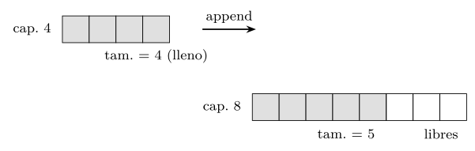
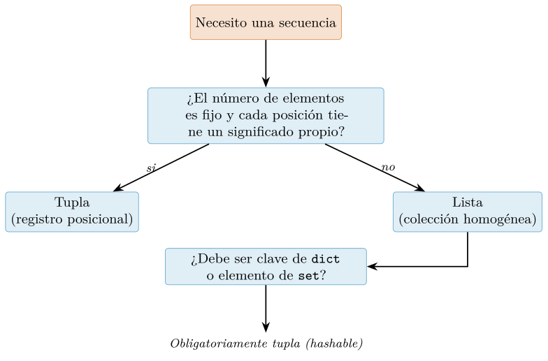
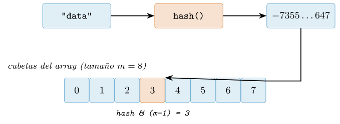
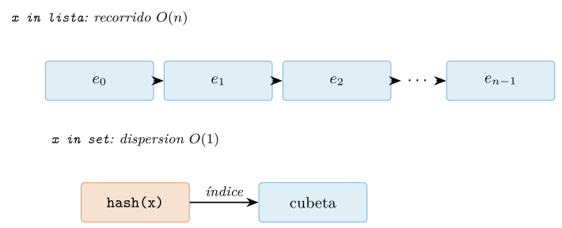
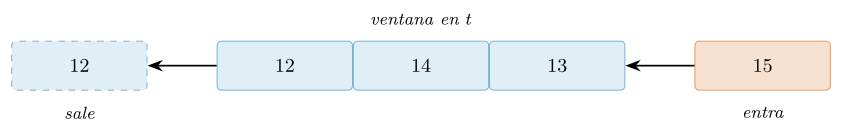
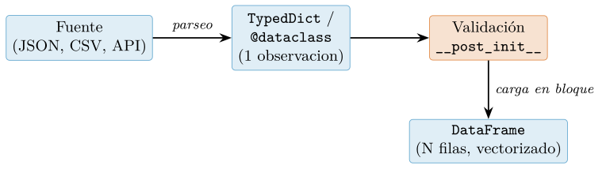
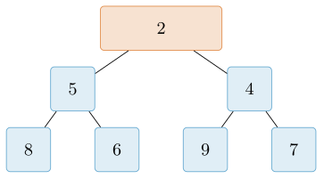
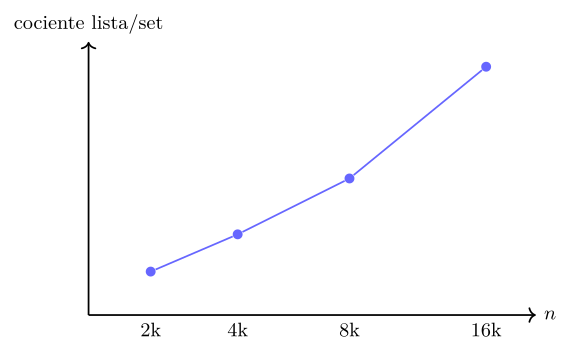

Capítulo 4. Estructuras de datos integradas y su coste
▶ Ejecutar este capítulo en Binder
La primera vez que se abre, Binder construye el entorno en la nube (unos 10-20 min); verás una pantalla de progreso. Después queda en caché y abre en segundos. Si parece que no responde, espera a que termine de construirse o vuelve a intentarlo.
Con los fundamentos del lenguaje dominados, empieza la Parte II, dedicada a las estructuras con las que se organizan los datos y al diseño de los programas que los manipulan. Este primer capítulo presenta las cuatro estructuras integradas de Python —lista, tupla, diccionario y conjunto— no como una lista de sintaxis, sino como herramientas con un coste conocido: cada una encarna un compromiso distinto entre orden, mutabilidad y velocidad de acceso, y elegir la correcta para cada tarea es la decisión que más afecta al rendimiento de un análisis, mucho más que cualquier microoptimización. Damos por asimilados el modelo de objetos y la mutabilidad (cap. 2) y las comprensiones y generadores (cap. 3); aquí se estudian las estructuras por dentro, su coste asintótico, las estructuras especializadas de la biblioteca estándar y el criterio para saber cuándo salir de las integradas hacia NumPy (cap. 7) o pandas (cap. 8).
Listas: el array dinámico
La lista es la secuencia mutable de propósito general del lenguaje y, muy probablemente, la estructura de datos que más se manipula al escribir código para ciencia de datos. Sirve como contenedor heterogéneo, como acumulador en bucles, como pila y –erróneamente, según veremos– a veces como cola. Su ubicuidad hace que un conocimiento superficial de su comportamiento pase inadvertido en programas pequeños, pero se convierta en una fuente de lentitud cuadrática silenciosa en cuanto los datos crecen. El objetivo de esta sección es doble: describir con precisión qué es una lista en la implementación de referencia de Python, CPython, y derivar de esa descripción una tabla de costes asintóticos que permita razonar sobre el rendimiento sin necesidad de medirlo caso por caso. Damos por conocidos el modelo de objetos, la distinción entre identidad y valor, y la mutabilidad, tratados en el cap. 2; las comprensiones de lista y los generadores, herramientas idiomáticas para construirlas, se estudiaron en el cap. 3 y aquí solo se referencian.
Qué es una lista: un array dinámico de referencias
Conviene desmontar de entrada una intuición procedente de lenguajes como C o Java. Una lista de Python no almacena sus elementos «dentro» de sí misma como un bloque de enteros o de estructuras contiguas. Almacena un bloque contiguo de referencias (punteros a objetos que viven en otra parte del montículo). Cuando escribimos [10, 20, 30], CPython reserva un bloque de tres punteros que apuntan a tres objetos enteros; la lista no sabe nada del tamaño de esos objetos ni de su tipo. Esta indirección es la que permite que una misma lista contenga un entero, una cadena y otra lista sin ningún esfuerzo: todos los elementos son, a ojos del contenedor, punteros del mismo tamaño (8 bytes en una máquina de 64 bits). Es también la razón de que una lista de un millón de flotantes ocupe mucha más memoria y sea mucho menos amistosa con la caché del procesador que el ndarray equivalente de NumPy, que sí almacena los valores empaquetados; volveremos sobre este contraste en el cap. 7.
Internamente, el objeto lista de CPython es una estructura PyListObject con tres campos relevantes: un puntero ob_item al bloque de referencias, un entero ob_size que registra cuántos elementos hay en uso (lo que devuelve len), y un entero allocated que registra cuántas ranuras se han reservado en el bloque. La distinción entre estos dos últimos números es el corazón de toda la sección. Un array dinámico es, por definición, un array de tamaño fijo que se sobredimensiona deliberadamente: se pide al asignador de memoria más espacio del estrictamente necesario, de modo que las próximas inserciones al final quepan sin tener que pedir memoria de nuevo. Cuando el espacio reservado se agota, se solicita un bloque mayor, se copian los punteros del viejo al nuevo y se libera el viejo. La estructura de datos abstracta correspondiente recibe el nombre de array dinámico, vector o arraylist según la tradición (Cormen et al. 2022); Ramalho (2022) describe con detalle esta correspondencia entre el tipo list de alto nivel y su implementación de bajo nivel.
import sys
xs = []
prev = -1
for n in range(0, 17):
cap = sys.getsizeof(xs) # bytes del objeto lista
if cap != prev: # detectamos un redimensionado
print(f"len={len(xs):2d} getsizeof={cap} bytes")
prev = cap
xs.append(n)
# len= 0 getsizeof=56 bytes
# len= 1 getsizeof=88 bytes -> capacidad reservada = 4
# len= 5 getsizeof=120 bytes -> capacidad reservada = 8
# len= 9 getsizeof=184 bytes -> capacidad reservada = 16
# len=17 getsizeof=248 bytes -> capacidad reservada = 24La salida anterior hace visible el mecanismo. El objeto vacío ocupa 56 bytes (la cabecera PyListObject, sin ranuras). Al insertar el primer elemento, CPython no reserva una ranura, sino cuatro: los 32 bytes adicionales son 4 punteros de 8 bytes. Hasta que len alcanza 4 no hace falta pedir más memoria; el quinto append dispara un redimensionado a 8 ranuras, el noveno a 16, y así sucesivamente. Nótese que sys.getsizeof mide únicamente el objeto lista y su bloque de punteros, no los objetos apuntados: la memoria real consumida por xs incluye además los enteros a los que apunta.
La política de crecimiento y el coste amortizado del append
La clave para que un array dinámico sea eficiente reside en cuánto se agranda el bloque en cada redimensionado. Si al llenarse se ampliara en una cantidad constante –por ejemplo, una ranura cada vez–, insertar \(n\) elementos exigiría \(1 + 2 + \cdots + n\) copias de punteros, un coste total \(\Theta(n^2)\): catastrófico. La solución universal es crecer de forma multiplicativa: cada redimensionado multiplica la capacidad por un factor constante mayor que uno. CPython emplea un crecimiento de aproximadamente un 12,5% (la capacidad nueva es, en esencia, la vieja más un octavo, con algunos términos de ajuste), y da la progresión 0, 4, 8, 16, 24, 32, 40, 52, … que observamos arriba.
Con crecimiento multiplicativo, el coste total de \(n\) operaciones append sucesivas es \(\Theta(n)\), aunque algunas de ellas individualmente sean caras. Repartiendo ese coste total entre las \(n\) operaciones, cada append cuesta \(O(1)\) en promedio. Esto es lo que se denomina coste amortizado constante, y no debe confundirse con el coste promedio de un análisis probabilístico: aquí no hay azar, sino una garantía sobre cualquier secuencia de \(n\) inserciones. El argumento formal –mediante el método contable o el método del potencial– se desarrolla en el capítulo sobre análisis amortizado de Cormen et al. (2022); Sedgewick y Wayne (2011) presenta el mismo resultado en el contexto de los arrays redimensionables. La consecuencia práctica es contundente: construir una lista de \(n\) elementos con un bucle de append es \(\Theta(n)\), perfectamente lineal, pese a que por el camino se produzcan \(O(\log n)\) redimensionados con sus respectivas copias.

append provoca la reserva de un bloque mayor (capacidad 8), la copia de los punteros existentes y la liberación del bloque antiguo. Las ranuras sombreadas están en uso (ob_size); las blancas son capacidad reservada pero libre (allocated \(-\) ob_size). El sobredimensionamiento amortiza el coste de futuras inserciones al final.Tabla de costes de las operaciones
De la representación como array dinámico contiguo se deducen los costes de todas las operaciones. El acceso y la asignación por índice, xs[i] y xs[i] = v, son \(O(1)\): conocida la dirección base del bloque y el índice, la dirección de la ranura es una suma y el resultado es un simple desreferenciado de puntero. En cambio, insertar o eliminar en una posición que no sea el final obliga a desplazar todos los elementos posteriores para mantener la contigüidad. Insertar al principio con xs.insert(0, v), o eliminar el primero con xs.pop(0) o del xs[0], mueve los \(n-1\) punteros restantes y por tanto cuesta \(O(n)\). La pertenencia v in xs recorre la lista comparando hasta encontrar el elemento o agotarla, y es \(O(n)\). La Tabla 4.1 resume el panorama; coincide con la referencia canónica de la comunidad, la página TimeComplexity del wiki oficial (Python Software Foundation 2023), y con la exposición de Ramalho (2022).
| Operación | Coste | Observación |
|---|---|---|
xs[i], xs[i] = v |
\(O(1)\) | Aritmética de punteros. |
len(xs) |
\(O(1)\) | Campo ob_size precalculado. |
xs.append(v) |
\(O(1)\) amort. | Redimensionado ocasional. |
xs.pop() |
\(O(1)\) amort. | Extrae del final. |
xs.insert(0, v) |
\(O(n)\) | Desplaza todos los elementos. |
xs.pop(0), del xs[0] |
\(O(n)\) | Desplaza todos los elementos. |
v in xs |
\(O(n)\) | Búsqueda lineal. |
xs[a:b] |
\(O(k)\) | Copia de \(k = b - a\) referencias. |
xs.extend(it) |
\(O(k)\) amort. | \(k\) = elementos añadidos. |
xs.sort(), sorted(xs) |
\(O(n \log n)\) | Timsort; sort in situ. |
El patrón anómalo de esta tabla son las dos filas \(O(n)\) correspondientes a operar al principio. Merecen atención porque el error es sutil: un bucle que consuma una lista por su cabeza –el idioma clásico de una cola– parece inocente pero es cuadrático.
# ANTIPATRON: usar una lista como cola FIFO -> O(n^2) en total
cola = list(range(1_000_000))
while cola:
tarea = cola.pop(0) # cada pop(0) desplaza ~n punteros: O(n)
procesar(tarea) # el bucle completo es O(n^2)La solución no es optimizar el detalle, sino cambiar de estructura de datos. El módulo collections ofrece deque, una cola doblemente terminada implementada como lista enlazada de bloques, cuyos métodos append, appendleft, pop y popleft son todos \(O(1)\) (Python Software Foundation 2026b). La regla mnemotécnica es directa: si se inserta o elimina por ambos extremos, o solo por la cabeza, se usa deque; si solo se opera por el final (una pila), la lista basta y sobra.
from collections import deque
cola = deque(range(1_000_000))
while cola:
tarea = cola.popleft() # O(1) real, no amortizado
procesar(tarea) # el bucle completo es O(n)Slicing, copias y aliasing
El slicing merece un tratamiento explícito porque es fuente frecuente tanto de elegancia como de sobrecoste inadvertido. La expresión xs[a:b] crea una lista nueva con copias de las \(k = b - a\) referencias del rango, con coste \(O(k)\) en tiempo y en memoria. Es una copia superficial (shallow): se copian los punteros, no los objetos apuntados; el nuevo bloque y el original comparten los mismos objetos hijos. Por ello ys = xs[:] es un modismo idiomático para duplicar una lista de un nivel, y xs[:] en el lado izquierdo de una asignación (xs[:] = it) reemplaza el contenido in situ sin crear un objeto lista nuevo, preservando su identidad para otros nombres que lo referencien. Que el slicing copie tiene una consecuencia de rendimiento importante: encadenar recortes o trocear repetidamente una lista grande multiplica el trabajo. Aquí es donde el contraste con NumPy resulta pedagógicamente valioso: el slicing de un ndarray devuelve una vista sin copia, que comparte el buffer subyacente en \(O(1)\) y permite modificar el original a través del recorte; ese comportamiento, con sus ventajas y sus trampas, se estudia en el cap. 7 (Harris et al. 2020).
xs = [1, 2, 3, 4, 5]
medio = xs[1:4] # copia superficial: [2, 3, 4], O(3)
medio[0] = 99 # NO afecta a xs
print(xs) # [1, 2, 3, 4, 5]
copia = xs[:] # duplicado de un nivel, O(n)
xs[:] = [7, 8, 9] # reemplaza el contenido in situ; misma identidad
print(copia) # [1, 2, 3, 4, 5] (copia no se ve afectada)
# Desempaquetado (unpacking) de secuencias
primero, *resto = xs # primero=7 ; resto=[8, 9]
a, b, c = medio # exige exactamente 3 elementosEl último bloque ilustra el desempaquetado de secuencias, un idioma central de Python que funciona sobre cualquier iterable, no solo listas. La forma con estrella (primero, *resto = xs) recoge en una lista los elementos sobrantes y es la manera legible de separar cabeza y cola sin incurrir en el coste del pop(0); Slatkin (2020) recomienda preferir el desempaquetado a la indexación explícita por su claridad y su resistencia a los errores de índice.
Ordenación: Timsort
Ordenar es la operación no trivial más común sobre listas. Python ofrece dos rutas: el método xs.sort(), que ordena in situ y devuelve None, y la función sorted(it), que acepta cualquier iterable y devuelve una lista nueva ordenada. Ambas comparten el mismo algoritmo, Timsort, un híbrido adaptativo de ordenación por mezcla (mergesort) e inserción diseñado para explotar los tramos ya ordenados (runs) que abundan en los datos reales. Su coste en el peor caso es \(O(n \log n)\) y, crucialmente, es \(O(n)\) en datos ya ordenados o casi ordenados, además de ser estable: preserva el orden relativo de los elementos con clave igual, propiedad esencial para las ordenaciones por múltiples criterios. Ambas rutas aceptan el argumento key, una función que se aplica una sola vez a cada elemento para obtener la clave de comparación.
registros = [("Ana", 30), ("Luis", 25), ("Eva", 30), ("Ivan", 25)]
# Ordenacion estable por edad (segundo campo); los empates
# conservan el orden original de aparicion gracias a la estabilidad.
registros.sort(key=lambda r: r[1])
# [("Luis",25), ("Ivan",25), ("Ana",30), ("Eva",30)]
# sorted no muta: devuelve una lista nueva y deja el iterable intacto.
top = sorted(registros, key=lambda r: r[1], reverse=True)La elección entre sort y sorted no es de estilo, sino semántica: sort solo existe en las listas y las muta; sorted funciona sobre cualquier iterable –incluidos generadores del cap. 3– y no altera su entrada, a costa de materializar una lista nueva de \(n\) elementos.
Cerramos con la advertencia de rendimiento más rentable de esta sección. Al construir una lista mediante inserciones, hágase siempre por el final con append o, mejor aún, con una comprensión de lista (cap. 3) que permite a CPython predimensionar el bloque; evítese insert(0, …) y pop(0) en bucles, y recúrrase a deque en cuanto la operación natural sea por la cabeza. Este único hábito elimina la clase más frecuente de lentitud cuadrática accidental en código de procesamiento de datos.
Tuplas y secuencias inmutables
Entre las estructuras integradas de Python, la tupla ocupa un lugar que a menudo se malinterpreta. La descripción coloquial “una tupla es una lista que no puede cambiar” es cómoda pero engañosa: sugiere que la inmutabilidad es la única diferencia y que ambas estructuras persiguen el mismo propósito. En realidad, la lista y la tupla codifican intenciones distintas. La lista es un contenedor homogéneo de longitud variable pensado para colecciones cuyo número de elementos evoluciona; la tupla es, en su uso idiomático, un registro de longitud fija en el que la posición porta significado. El primer elemento de (nombre, edad, ciudad) no es “un elemento cualquiera”: es específicamente el nombre. Esta diferencia semántica, que Ramalho (2022) desarrolla con detalle, tiene consecuencias prácticas de rendimiento, de corrección y de diseño que esta sección examina en profundidad.
Registro por posición frente a colección homogénea
Considérese la representación de una persona. Con una lista, el código comunica implícitamente que la colección podría crecer, encogerse o reordenarse:
persona = ["Ada", 36, "Londres"]
persona.append("matematica") # legal, pero, tiene sentido?
persona.sort() # TypeError, y aun asi es "posible" pedirloQue append sea una operación válida sobre persona revela que el tipo elegido no restringe lo que no debería ocurrir: nada en la lista impide añadir un cuarto campo o permutar nombre y ciudad. La tupla, en cambio, fija la aridad y el orden en el momento de la construcción:
persona = ("Ada", 36, "Londres")
nombre, edad, ciudad = persona # el orden es el contratoAquí el número tres y el orden (nombre, edad, ciudad) son el esquema de datos. La tupla no es una lista degradada: es una estructura cuyo tamaño fijo y cuya semántica posicional constituyen precisamente su valor. Esta lectura de la tupla como registro está en la raíz del modelo de datos de Python, tal como lo describe la referencia oficial (Python Software Foundation, s. f.), y explica por qué el intérprete la trata de forma privilegiada en múltiples contextos (retorno múltiple de funciones, claves compuestas, formateo).
La consecuencia decisiva: hashabilidad
La distinción semántica se traduce en una propiedad técnica de primer orden. Una tupla cuyos elementos son todos hashables es a su vez hashable, mientras que una lista nunca lo es. Esto enlaza directamente con la mutabilidad y la identidad tratadas en el cap. 2: un objeto solo puede usarse como clave de un diccionario o como elemento de un conjunto si su valor hash permanece estable durante toda su vida, lo cual exige que el objeto sea inmutable en aquello que determina su hash.
# Clave compuesta (artista, titulo): idiomatico y correcto
albumes = {("Radiohead", "Creep"): "Pablo Honey",
("Aphex Twin", "Xtal"): "SAW 85-92"}
# Conjunto de aristas de un grafo
aristas = {(0, 1), (1, 2), (2, 0)}
# Una lista NO puede ser clave
d = {["Radiohead", "Creep"]: "Pablo Honey"}
# TypeError: unhashable type: 'list'Esta hashabilidad convierte a la tupla en el vehículo natural para claves compuestas: pares \((fila, columna)\) que indexan celdas dispersas, combinaciones \((usuario, producto)\) en una matriz de interacciones, o cualquier registro que deba servir de identificador dentro de un dict o de un set. Como advierte Beazley y Jones (2013), esta es una de las razones más frecuentes para preferir tuplas en el modelado de datos: no por estética, sino porque habilitan estructuras de acceso asociativo que la lista prohíbe.
Conviene precisar el matiz: la hashabilidad de la tupla es condicional. Una tupla que contenga un objeto mutable deja de ser hashable, porque su hash dependería de un valor que puede cambiar.
hash((1, 2, 3)) # correcto
hash((1, [2, 3])) # TypeError: unhashable type: 'list'
hash((1, (2, 3))) # correcto: anidamiento de tuplasLa regla es composicional: una tupla es hashable si y solo si lo son todos sus componentes. Esta propiedad se apoya en el protocolo __hash__/__eq__ descrito en (Python Software Foundation, s. f.) y es coherente con la definición de tabla de dispersión analizada en (Cormen et al. 2022), donde la estabilidad de la clave es requisito para el coste amortizado \(O(1)\) promedio de la búsqueda.
Compacidad y coste
La inmutabilidad y el tamaño fijo permiten al intérprete representar la tupla de forma más compacta que la lista equivalente. Una lista debe reservar capacidad adicional para amortizar futuras inserciones (over-allocation) y mantiene un puntero indirecto a un array dinámico de elementos que puede reubicarse; esta sobreasignación es lo que hace que el coste del append sea \(O(1)\) amortizado. La tupla, cuya longitud no cambiará jamás, almacena sus referencias en un bloque de tamaño exacto fijado en la construcción.
import sys
sys.getsizeof([1, 2, 3]) # tipicamente mayor
sys.getsizeof((1, 2, 3)) # tipicamente menor| Dimensión | Tupla | Lista |
|---|---|---|
| Mutabilidad | Inmutable | Mutable |
| Longitud | Fija en construcción | Variable |
| Semántica idiomática | Registro posicional | Colección homogénea |
| Hashable | Sí (si sus elementos lo son) | No |
| Memoria por objeto | Menor (bloque exacto) | Mayor (sobreasignación) |
| Construcción literal | Ligeramente más rápida | Más lenta |
| Uso como clave/elemento de set | Sí | No |
Más allá del ahorro de memoria, el intérprete puede almacenar tuplas literales de constantes como singletons dentro del código compilado y reutilizarlas, evitando reconstruirlas en cada evaluación. Slatkin (2020) señala que estas ventajas rara vez justifican por sí solas la elección de una tupla en código de aplicación; el argumento decisivo sigue siendo semántico. La compacidad es un beneficio colateral que se vuelve relevante a escala, por ejemplo cuando millones de registros pequeños coexisten en memoria y la sobreasignación de la lista se multiplica. En ese régimen conviene recordar que estas estructuras almacenan referencias a objetos, no los objetos empaquetados; para datos numéricos homogéneos y densos, el array de NumPy (Harris et al. 2020) o las estructuras columnares de pandas (McKinney 2022) superan a cualquier secuencia integrada, tema que se retoma más adelante en este capítulo.
Desempaquetado y desempaquetado extendido
El desempaquetado (unpacking) es la operación que hace de la tupla una herramienta expresiva y no un mero contenedor. Permite ligar simultáneamente varios nombres a las posiciones de una secuencia, haciendo explícito el contrato posicional en el punto de uso:
punto = (3, 4)
x, y = punto # desempaquetado basico
# Intercambio sin variable temporal (crea y desempaqueta una tupla)
a, b = b, a
# Retorno multiple: la funcion devuelve UNA tupla
def dividir(x, y):
return x // y, x % y
cociente, resto = dividir(17, 5)El desempaquetado extendido, introducido para secuencias de longitud parcialmente conocida, usa el operador estrella para capturar en una lista todos los elementos no ligados explícitamente:
primero, *resto = (10, 20, 30, 40)
# primero -> 10 ; resto -> [20, 30, 40]
cabeza, *medio, cola = range(1, 6)
# cabeza -> 1 ; medio -> [2, 3, 4] ; cola -> 5
# Descartar posiciones con el guion bajo convencional
_, edad, _ = personaObsérvese que la variable con estrella siempre recoge una list, aunque la fuente sea una tupla: el desempaquetado extendido está pensado para tomar una porción de tamaño variable, y ese “resto” es conceptualmente una colección homogénea, no un registro. Este idioma, recomendado por Slatkin (2020) frente al acceso por índice explícito, reduce errores de fuera de rango y mejora la legibilidad al nombrar las partes relevantes. El desempaquetado se generaliza además a los patrones estructurales de match y a las firmas de función con *args, coherentemente con el modelo descrito en (Python Software Foundation 2026d).
Campos nombrados: de la posición al nombre
El talón de Aquiles del registro posicional es la legibilidad cuando crece la aridad. En fila[3] nada indica que la cuarta posición es la ciudad; y persona[1] obliga a recordar que la edad va en el índice uno. La biblioteca estándar ofrece dos remedios que conservan las ventajas de la tupla (inmutabilidad, hashabilidad, compacidad relativa) añadiendo acceso por nombre.
El primero es collections.namedtuple (Python Software Foundation 2026b), una fábrica que genera una subclase de tuple con campos nombrados:
from collections import namedtuple
Persona = namedtuple("Persona", ["nombre", "edad", "ciudad"])
ada = Persona("Ada", 36, "Londres")
ada.nombre # "Ada" (acceso por nombre)
ada[0] # "Ada" (sigue siendo una tupla)
ada.edad + 1 # 37
n, e, c = ada # desempaqueta como cualquier tupla
ada._replace(edad=37) # nueva instancia; el original no cambia
isinstance(ada, tuple) # TrueEl segundo, más moderno y preferido en código anotado, es typing.NamedTuple, que permite declarar campos tipados con una sintaxis de clase, apoyada en el sistema de anotaciones de (Rossum et al. 2014):
from typing import NamedTuple
class Persona(NamedTuple):
nombre: str
edad: int
ciudad: str = "Desconocida" # valor por defecto
ada = Persona("Ada", 36)
ada.ciudad # "Desconocida"Ambas construcciones producen objetos que son tuplas a todos los efectos: se pueden usar como claves de diccionario, comparar por posición, indexar y desempaquetar, pero además exponen atributos legibles y, en el caso de NamedTuple, información de tipos que los verificadores estáticos (véase (Rossum et al. 2014) y las anotaciones de (Langa 2019)) pueden comprobar. Constituyen así un puente natural hacia el modelado de datos estructurado con clases de datos, que se desarrolla en §4.6 y se apoya en (Smith 2017). Ramalho (2022) presenta las tuplas nombradas como el eslabón que une el uso informal de la tupla-registro con el diseño explícito de tipos de datos.
Criterio de elección: tupla o lista
La decisión entre tupla y lista no debe basarse en la microoptimización sino en la semántica del dato, y solo secundariamente en el coste. La siguiente figura resume el árbol de decisión que se recomienda seguir.

En síntesis operativa: se elige una tupla cuando el número de elementos es conocido y estable, cuando la posición codifica el rol de cada componente, cuando se necesita hashabilidad para indexar asociativamente, o cuando se quiere comunicar al lector y al verificador de tipos que el valor no debe mutar. Se elige una lista cuando la colección es homogénea, cuando su tamaño evolucionará mediante append, extend o pop, o cuando se van a aplicar operaciones de reordenación como sort. Cuando la tupla-registro empieza a tener demasiadas posiciones para recordarlas, la promoción a typing.NamedTuple o a una clase de datos (§4.6) preserva la intención sin perder las garantías. Esta jerarquía de decisiones, defendida tanto por Ramalho (2022) como por Beazley y Jones (2013), mantiene el código a la vez expresivo y eficiente sin caer en la falsa dicotomía de “una lista que no cambia”.
Diccionarios: la tabla hash
El diccionario (dict) es la estructura de datos asociativa por excelencia de Python: relaciona claves con valores y ofrece búsqueda, inserción y borrado en tiempo constante amortizado promedio, es decir \(O(1)\). Frente a la lista, cuyo acceso por contenido exige recorrer los elementos uno a uno (\(O(n)\)), el diccionario calcula la posición donde debe estar la clave en lugar de buscarla. Esta diferencia, que sobre pocos elementos parece irrelevante, se convierte sobre millones de registros en la distancia entre segundos y horas, y es por ello una de las decisiones de diseño más rentables en cualquier canalización de datos.
Más allá de su utilidad directa, el diccionario es la estructura más importante del lenguaje en un sentido literal: la implementación de CPython lo utiliza internamente para los espacios de nombres (los globals() y locals() de cada módulo y función), para los atributos de la mayoría de los objetos (el __dict__ de las instancias, véase cap. 2) y para el paso de argumentos por palabra clave (**kwargs). Comprender su coste y su semántica no es, por tanto, un lujo académico: es entender cómo funciona Python por dentro (Ramalho 2022).
De la clave a la posición: la función hash
La idea que sostiene el diccionario es la tabla hash (hash table), estudiada en profundidad en la literatura clásica de algoritmos (Cormen et al. 2022; Knuth 1998). Una tabla hash mantiene un array contiguo de \(m\) posiciones o cubetas (buckets). Para localizar una clave, no se recorre el array: se aplica a la clave una función de dispersión (hash function) que produce un entero, y ese entero, reducido módulo el tamaño de la tabla, indica directamente la cubeta donde la pareja clave–valor debe residir. Buscar se reduce entonces a calcular una dirección y leerla, operación independiente del número de elementos almacenados.
En Python esa función de dispersión es la incorporada hash, que devuelve un entero para cualquier objeto hashable. El siguiente listado muestra su comportamiento y la relación entre hash y las cubetas.
>>> hash("data") # entero dependiente de la clave
-7355109919522152647
>>> hash(42) # para enteros pequenos, hash(n) == n
42
>>> hash((1, 2, 3)) # las tuplas de hashables son hashables
529344067295497451
# idea de la cubeta: entero -> posicion en un array de tamano m
m = 8
for clave in ("data", 42, (1, 2, 3)):
print(clave, "->", hash(clave) & (m - 1)) # hash(clave) mod mLa reducción módulo el tamaño de la tabla se implementa en CPython con una operación de máscara de bits (hash & (m - 1)) porque \(m\) es siempre una potencia de dos, y la hace considerablemente más rápida que el operador módulo genérico. La Figura 4.3 ilustra este recorrido: la clave atraviesa la función de dispersión, obtiene un entero y este selecciona la cubeta.

hash, que produce un entero; el entero, reducido módulo el tamaño del array, selecciona la cubeta donde se almacena la pareja clave–valor. La búsqueda no recorre la tabla, la direcciona.Claves hashables: el requisito de la inmutabilidad
Para que este mecanismo funcione, el valor devuelto por hash debe ser estable durante toda la vida del objeto mientras este actúe como clave: si el hash cambiara, la clave quedaría almacenada en una cubeta pero se buscaría en otra, y se volvería irrecuperable. De ahí el requisito esencial: solo los objetos hashables pueden ser claves de un diccionario. Un objeto es hashable si implementa __hash__ (devolviendo un entero constante) y __eq__ de forma coherente, es decir, si dos objetos son iguales según __eq__, sus hashes deben coincidir (Python Software Foundation, s. f.).
En la práctica, los tipos inmutables incorporados son hashables (int, float, str, bytes, tuple de elementos hashables, frozenset), mientras que los mutables no lo son (list, dict, set), precisamente porque su contenido podría cambiar y con él su hash. La relación entre mutabilidad, identidad e igualdad se trata en detalle en el cap. 2; aquí basta con retener la consecuencia operativa.
>>> d = {}
>>> d[(1, 2)] = "tupla como clave: valida" # tupla inmutable -> OK
>>> d[[1, 2]] = "lista como clave" # lista mutable
Traceback (most recent call last):
...
TypeError: unhashable type: 'list'
>>> from collections import namedtuple
>>> Punto = namedtuple("Punto", "x y")
>>> d[Punto(0, 0)] = "origen" # namedtuple es hashable (es una tupla)Colisiones y su resolución
Puesto que hay infinitas claves posibles pero un número finito de cubetas, es inevitable que dos claves distintas produzcan la misma posición: es lo que se denomina una colisión. Ninguna tabla hash puede evitarlas por completo; lo que la distingue es cómo las resuelve. La literatura describe dos familias principales (Cormen et al. 2022; Sedgewick y Wayne 2011): el encadenamiento (chaining), en el que cada cubeta guarda una lista enlazada de las parejas que colisionan, y el direccionamiento abierto (open addressing), en el que, ante una colisión, se prueba con otra cubeta según una secuencia de sondeo (probing) hasta hallar una libre.
CPython emplea direccionamiento abierto con una secuencia de sondeo cuidadosamente diseñada. Cuando la cubeta calculada está ocupada por una clave distinta, se genera una nueva posición mezclando los bits altos del hash con la posición previa, de modo que las claves se dispersen de forma pseudoaleatoria por la tabla y se eviten los agrupamientos (clustering). En la comparación de igualdad durante el sondeo, CPython aplica primero un atajo por identidad (is) antes de invocar __eq__, y acelera el caso frecuente en que la clave buscada es el mismo objeto que la almacenada.
El coste \(O(1)\) es, por ello, un promedio: en el peor caso patológico (todas las claves colisionando en la misma cubeta) la búsqueda degeneraría a \(O(n)\). En la práctica, dos mecanismos lo evitan. Primero, la tabla mantiene un factor de carga bajo (en CPython se redimensiona cuando supera aproximadamente dos tercios de ocupación), copiando las parejas a un array mayor; esta operación es \(O(n)\) puntual, pero repartida sobre las inserciones deja el coste amortizado en \(O(1)\). Segundo, las funciones de dispersión de los tipos incorporados están diseñadas para distribuir bien las claves reales. La Tabla 4.3 resume los costes según la referencia comunitaria de complejidad (Python Software Foundation 2023) y los textos clásicos (Cormen et al. 2022).
| Operación | Ejemplo | Caso promedio | Peor caso |
|---|---|---|---|
| Acceso por clave | d[k] |
\(O(1)\) | \(O(n)\) |
| Inserción / asignación | d[k] = v |
\(O(1)\) | \(O(n)\) |
| Borrado | del d[k] |
\(O(1)\) | \(O(n)\) |
| Pertenencia | k in d |
\(O(1)\) | \(O(n)\) |
| Recorrido | for k in d |
\(O(n)\) | \(O(n)\) |
| (Lista) pertenencia | x in lista |
\(O(n)\) | \(O(n)\) |
El diccionario compacto y el orden de inserción
Hasta Python 3.5 el diccionario no garantizaba ningún orden en el recorrido de sus claves. En Python 3.6 CPython adoptó la implementación del diccionario compacto propuesta por Raymond Hettinger, y desde Python 3.7 el lenguaje garantiza formalmente que el recorrido de un diccionario respeta el orden de inserción de las claves (Python Software Foundation 2026d). Conviene subrayar el matiz: no es un detalle de una implementación concreta, es una promesa del lenguaje sobre la que se puede programar con seguridad.
El diseño compacto separa la tabla hash en dos estructuras. Un array denso de entradas almacena las parejas hash–clave–valor en el orden en que fueron insertadas; y un array de índices (la tabla hash propiamente dicha) contiene únicamente pequeños enteros que apuntan a posiciones de ese array denso. La ventaja es doble: el recorrido sigue el array de entradas y por tanto respeta el orden de inserción, y el array de índices, al contener enteros pequeños en lugar de parejas completas, ocupa mucha menos memoria (una reducción de en torno al 20–25% respecto del diseño anterior). Es un raro caso en que una misma decisión mejora simultáneamente el consumo de memoria y ofrece una garantía semántica nueva.
La interfaz del diccionario
La riqueza del diccionario está tanto en su coste como en su interfaz, diseñada para expresar con precisión los patrones habituales de acceso con valor por defecto, acumulación y actualización (Beazley y Jones 2013). El acceso directo d[k] lanza KeyError si la clave no existe; cuando la ausencia es un caso esperado y no un error, get devuelve un valor por defecto en su lugar.
inventario = {"manzanas": 30, "peras": 12}
inventario["kiwis"] # KeyError si no existe
inventario.get("kiwis") # -> None (sin excepcion)
inventario.get("kiwis", 0) # -> 0 (defecto explicito)
# setdefault: consulta e inserta el defecto si falta, en UNA operacion.
# Patron clasico de agrupamiento (agrupar palabras por su inicial):
palabras = ["ola", "oso", "arbol", "otono", "abeja"]
grupos = {}
for w in palabras:
grupos.setdefault(w[0], []).append(w)
# grupos -> {'o': ['ola', 'oso', 'otono'], 'a': ['arbol', 'abeja']}El patrón de setdefault para agrupar es idiomático, pero la biblioteca estándar ofrece una herramienta más legible para el caso frecuente, collections.defaultdict, que se estudia junto con las demás estructuras especializadas más adelante en este capítulo (Python Software Foundation 2026b). El método update funde otro diccionario (o un iterable de parejas, o argumentos por palabra clave) en el receptor, sobrescribiendo las claves coincidentes; desde Python 3.9 los operadores | y |= ofrecen una sintaxis equivalente para fusionar y actualizar.
config = {"host": "localhost", "puerto": 5432}
config.update({"puerto": 5433, "ssl": True}) # sobrescribe y anade
# config -> {'host': 'localhost', 'puerto': 5433, 'ssl': True}
base = {"a": 1, "b": 2}
extra = {"b": 20, "c": 3}
fusion = base | extra # nuevo dict: {'a': 1, 'b': 20, 'c': 3}
base |= extra # actualizacion in situ del propio 'base'Por último, keys, values e items devuelven vistas (view objects): objetos ligeros que no copian los datos, sino que reflejan dinámicamente el estado del diccionario. Si el diccionario cambia, la vista lo refleja de inmediato. Las vistas de claves y de items, además, se comportan como conjuntos (set-like) y admiten operaciones de intersección y diferencia, y las hace idóneas para comparar diccionarios sin materializar estructuras intermedias.
notas = {"ana": 9, "luis": 7, "eva": 8}
claves = notas.keys() # vista dinamica, no una copia
"ana" in claves # -> True, consulta O(1)
notas["marc"] = 6 # modificamos el dict...
list(claves) # -> [..., 'marc']: la vista ya lo refleja
# Las vistas de claves operan como conjuntos:
otras = {"ana": 10, "pau": 5}
notas.keys() & otras.keys() # -> {'ana'} (claves comunes)
notas.keys() - otras.keys() # -> {'luis', 'eva', 'marc'}
# Recorrer parejas con items() es el idioma preferente:
for nombre, nota in notas.items():
print(f"{nombre}: {nota}")Iterar con items es preferible a recorrer las claves y volver a indexar (for k in d: ... d[k]), porque evita una segunda búsqueda por clave en cada paso y expresa con más claridad la intención. Debe recordarse, no obstante, que modificar el tamaño de un diccionario mientras se recorre una de sus vistas provoca un RuntimeError: si se necesita mutar durante la iteración, conviene recorrer una copia de las claves con list(d). Con estas piezas —coste \(O(1)\) promedio, orden de inserción garantizado y una interfaz expresiva de vistas dinámicas— el diccionario se erige en la herramienta de referencia para indexar, agrupar y unir datos, tareas centrales de todo trabajo con datos que se retomarán con pandas en el cap. 7 (McKinney 2022).
Conjuntos: pertenencia y álgebra de conjuntos
El tipo set es, en esencia, un dict al que se le han amputado los valores: conserva la tabla de dispersión (hash table) que indexa las claves, pero solo almacena su presencia. De ahí heredan los conjuntos sus dos propiedades definitorias y toda su tabla de costes. Un set es una colección no ordenada de elementos únicos y hashables que ofrece comprobación de pertenencia en tiempo constante amortizado y las cuatro operaciones del álgebra de conjuntos como primitivas del lenguaje. Esta sección no reexplica el modelo de objetos ni la noción de hashabilidad — tratados en el Capítulo 2 — sino que los da por conocidos para razonar sobre cuándo y por qué un conjunto sustituye ventajosamente a una lista, con especial atención al patrón de rendimiento que enlaza con el coste algorítmico de Sección 4.7.
El tipo set y su parentesco con dict
Los elementos de un conjunto deben ser hashables: su método __hash__ ha de existir y ser estable, y dos objetos iguales según __eq__ deben producir el mismo hash. Los tipos inmutables del núcleo (int, float, str, bytes, tuple de elementos hashables, frozenset) lo son; list, dict y set no. Intentar insertar un elemento no hashable produce TypeError, y esa restricción no es un capricho: es la condición que hace posible el coste \(O(1)\), pues la tabla localiza cada elemento a partir de su hash en lugar de recorrer la colección. La equivalencia estructural con dict — ambos apoyados sobre la misma implementación de tabla con direccionamiento abierto (open addressing), descrita en el Capítulo 2 — explica que compartan costes, restricciones y buena parte de la interfaz.
vacio = set() # {} crearia un dict vacio, NO un conjunto
a = {1, 2, 3, 3, 2} # literal; los duplicados se colapsan
print(a) # {1, 2, 3}
print(len(a)) # 3
b = set([1, 1, 2, 5]) # constructor sobre cualquier iterable
b.add(8) # insercion O(1) amortizado
b.discard(99) # elimina si esta; sin error si no
print(2 in b) # pertenencia O(1): True
try:
{[1, 2]} # una lista no es hashable
except TypeError as e:
print(type(e).__name__) # TypeErrorConviene fijar desde el principio una trampa de sintaxis: {} no es un conjunto vacío sino un diccionario vacío; el conjunto vacío solo se obtiene con set(). En cambio, cualquier literal con al menos un elemento y sin dos puntos, como {1, 2, 3}, sí es un conjunto. Las comprensiones de conjunto ({f(x) for x in it}) se estudian junto con las demás comprensiones en el Capítulo 3 y aquí solo se usan de pasada.
Un conjunto es una estructura mutable: add, discard, remove, pop y update modifican el objeto en el sitio. Por ser mutable, un set no es hashable y no puede, por tanto, ser elemento de otro conjunto ni clave de un diccionario. Cuando se necesita esa capacidad — un conjunto de conjuntos, o usar un conjunto como clave de agrupación — se recurre a su gemelo inmutable.
frozenset: la variante inmutable y hashable
frozenset es la versión congelada de set: expone todos los métodos de consulta y las operaciones algebraicas, pero carece de los métodos de mutación. Al ser inmutable, es hashable, y esa es su razón de ser: permite anidar conjuntos y usarlos como claves.
# Deduplicar aristas no dirigidas de un grafo: {a, b} == {b, a}
aristas = [("A", "B"), ("B", "A"), ("A", "C")]
canonicas = {frozenset(par) for par in aristas}
print(len(canonicas)) # 2: {A,B} y {A,C}
# Un frozenset SI puede ser clave de un dict
region = {frozenset({"ES", "PT"}): "Iberia",
frozenset({"NO", "SE"}): "Escandinavia"}
print(region[frozenset({"PT", "ES"})]) # 'Iberia'La regla práctica es directa: si el conjunto se va a modificar, use set; si se va a almacenar (como elemento, como clave o como valor que no debe cambiar bajo los pies de quien lo comparte), use frozenset. La distinción es la misma que separa list de tuple y se apoya en la semántica de identidad e igualdad del Capítulo 2.
Álgebra de conjuntos
La riqueza expresiva de los conjuntos reside en sus cuatro operaciones binarias, disponibles tanto como operadores como métodos. Los operadores exigen que ambos operandos sean conjuntos; los métodos homónimos aceptan cualquier iterable en el lado derecho, y a menudo evita una conversión explícita.
| Operacion | Operador | Método | Coste esperado |
|---|---|---|---|
| Union | A | B |
A.union(B) |
\(O(|A| + |B|)\) |
| Interseccion | A & B |
A.intersection(B) |
\(O(\min(|A|, |B|))\) |
| Diferencia | A - B |
A.difference(B) |
\(O(|A|)\) |
| Dif. simétrica | A ^ B |
A.symmetric_difference(B) |
\(O(|A| + |B|)\) |
| Subconjunto | A <= B |
A.issubset(B) |
\(O(|A|)\) |
| Superconjunto | A >= B |
A.issuperset(B) |
\(O(|B|)\) |
| Disjuntos | — | A.isdisjoint(B) |
\(O(\min(|A|, |B|))\) |
usuarios_activos = {"ana", "luis", "eva", "raul"}
usuarios_premium = {"eva", "raul", "nil"}
usuarios_premium | usuarios_activos # todos: union
usuarios_premium & usuarios_activos # premium Y activos: {'eva', 'raul'}
usuarios_activos - usuarios_premium # activos NO premium: {'ana', 'luis'}
usuarios_activos ^ usuarios_premium # en uno u otro, no en ambos
# Version con metodos: acepta iterables sin convertir a set
nuevos = ["nil", "ana", "sara"]
usuarios_activos.intersection(nuevos) # {'ana', 'nil'}
# Relaciones de contencion
{"eva"} <= usuarios_premium # True: subconjunto
usuarios_activos.isdisjoint({"zoe"}) # True: sin elementos comunesCada operación de asignación tiene además su variante in place (|=, &=, -=, ^=), que modifica el operando izquierdo sin construir un objeto nuevo. La intersección merece una observación de coste: recorre el menor de los dos conjuntos y consulta la pertenencia en el mayor, de modo que su coste esperado es \(O(\min(|A|, |B|))\) y no \(O(|A| + |B|)\); el intérprete elige automáticamente el operando pequeño para iterar. Estos costes lineales o sublineales, con las cotas resumidas en el cuadro de complejidad de Sección 4.7, siguen el catálogo de la comunidad (Python Software Foundation 2023) y son coherentes con el análisis amortizado de tablas de dispersión de Cormen et al. (2022).
Deduplicar y comprobar pertenencia masiva
En el trabajo con datos, dos usos concentran casi todo el valor práctico de los conjuntos. El primero es deduplicar: convertir un iterable en set elimina repeticiones en tiempo lineal esperado, muy por debajo del \(O(n^2)\) de una deduplicación ingenua que compare cada elemento con todos los anteriores. El precio es perder el orden; cuando se necesita preservar el orden de primera aparición, el idioma canónico usa un dict como conjunto ordenado, aprovechando que desde Python 3.7 los diccionarios conservan el orden de inserción (Ramalho 2022).
datos = ["a", "b", "a", "c", "b", "a"]
unicos = set(datos) # rapido, pierde el orden: {'a','b','c'}
unicos_ordenados = list(dict.fromkeys(datos)) # ['a', 'b', 'c']: conserva ordenEl segundo uso, y el de mayor impacto, es la pertenencia masiva: la regla de rendimiento sobre la que gira esta sección.
La regla de rendimiento: x in lista frente a x in set
La expresión x in coleccion tiene el mismo aspecto sintáctico sea cual sea el tipo de coleccion, pero su coste es radicalmente distinto. En una lista (o una tupla) la pertenencia se resuelve por recorrido secuencial: en el peor caso y en promedio se comparan \(\Theta(n)\) elementos. En un conjunto (o un diccionario) se resuelve por dispersión: un hash y una comparación local, \(O(1)\) esperado. La Figura 4.4 contrasta ambos mecanismos.

x in coleccion. En la lista el intérprete compara x con los elementos uno a uno hasta encontrarlo o agotar la secuencia, coste \(O(n)\). En el conjunto calcula hash(x), deriva el índice de una cubeta y comprueba la igualdad solo con lo que allí reside, coste \(O(1)\) esperado.La consecuencia operativa es una de las causas más frecuentes de lentitud accidental en código de datos. Comprobar \(m\) pertenencias contra una lista de \(n\) elementos cuesta \(O(m \cdot n)\); el mismo trabajo contra un conjunto cuesta \(O(m)\) tras un preprocesado \(O(n)\) para construirlo. Cuando \(m\) es grande, la diferencia entre \(O(m \cdot n)\) y \(O(n + m)\) es precisamente el \(O(n^2)\) accidental descrito en Sección 4.7: el patrón «para cada fila, comprobar si está en esta otra colección», escrito sobre listas, degrada a cuadrático sin que ninguna línea individual parezca sospechosa.
# ANTIPATRON: O(m * n). 'prohibidos' es una lista; cada 'in' recorre.
prohibidos = cargar_lista_negra() # p. ej. 50_000 elementos
limpios = [fila for fila in flujo # m filas
if fila.id not in prohibidos] # cada 'in' es O(n)
# CORRECCION: O(n + m). Construir el set UNA vez, consultar en O(1).
prohibidos_set = set(prohibidos) # O(n), una sola vez
limpios = [fila for fila in flujo
if fila.id not in prohibidos_set] # cada 'in' es O(1)La regla, enunciada de forma accionable: si va a comprobar la pertenencia de muchos elementos contra la misma colección, conviértala a set (o frozenset) una sola vez antes del bucle. La conversión cuesta \(O(n)\) y se amortiza en cuanto el número de consultas supera un umbral pequeño. Si además la colección de referencia no cambia, frozenset documenta esa intención y la protege frente a mutaciones accidentales.
Un experimento medido
La teoría se vuelve tangible al medirla. El siguiente listado cronometra \(m = 20\,000\) comprobaciones de pertenencia contra una colección de \(n = 100\,000\) enteros, primero como lista y después como conjunto. Es esencial cronometrar solo las consultas y excluir la construcción de las estructuras, para aislar el coste de la operación que se repite; el coste de conversión se mide aparte y se comenta después.
import random
from time import perf_counter
n, m = 100_000, 20_000
datos = [random.randint(0, 10_000_000) for _ in range(n)]
consultas = [random.randint(0, 10_000_000) for _ in range(m)]
como_lista = datos
como_set = set(datos) # coste O(n), fuera de la medicion
t0 = perf_counter()
sum(1 for q in consultas if q in como_lista) # O(m * n)
t_lista = perf_counter() - t0
t0 = perf_counter()
sum(1 for q in consultas if q in como_set) # O(m)
t_set = perf_counter() - t0
print(f"lista: {t_lista:.4f} s")
print(f"set: {t_set:.6f} s")
print(f"cociente lista/set: {t_lista / t_set:.0f}x")En una ejecución representativa sobre CPython 3.12 en una máquina de sobremesa, la versión con lista tarda unos 7,8 s y la versión con conjunto unos 1,9 ms: un cociente de aproximadamente 4000\(\times\). El coste por consulta es de unos \(390~\mu\)s en la lista frente a unos \(95\) ns en el conjunto. Estos valores son medidos, no sintéticos; su magnitud absoluta depende del hardware, de la versión del intérprete y de la fracción de aciertos, pero el cociente escala con \(n\): al duplicar el tamaño de la colección de referencia, la ventaja del conjunto se duplica, exactamente como predice el paso de \(O(m \cdot n)\) a \(O(m)\). La construcción set(datos) añade en este caso menos de \(10\) ms, de modo que se amortiza tras apenas unas decenas de consultas.
En síntesis operativa, y sin ánimo de recapitular: el conjunto es la respuesta correcta siempre que el problema se formule en términos de pertenencia, unicidad o álgebra sobre colecciones de elementos hashables. Reconocer ese formulismo bajo un bucle de listas — y traducirlo a un in sobre un set preconstruido — es una de las intervenciones de mayor relación beneficio/esfuerzo en el código de ciencia de datos, y el ejemplo canónico del salto de \(O(n^2)\) a \(O(n)\) que vertebra Sección 4.7. La discusión detallada de este idioma, con más patrones idiomáticos de conjuntos y diccionarios, puede seguirse en Ramalho (2022).
El módulo collections: estructuras especializadas para datos
Las estructuras integradas que hemos examinado hasta ahora — list, dict, set y tuple — cubren la mayoría de las necesidades cotidianas, pero ciertos patrones aparecen con tanta frecuencia en el trabajo con datos que la biblioteca estándar ofrece implementaciones especializadas, cuidadosamente optimizadas y escritas en C, en el módulo collections. Contar frecuencias, agrupar registros por una clave, mantener una ventana deslizante de tamaño fijo o superponer varios diccionarios de configuración son tareas recurrentes; resolverlas «a mano» con las estructuras básicas es posible, pero conduce a código más largo, más lento y más propenso a errores. Dominar collections es, por tanto, un paso natural hacia un código idiomático y eficiente. La documentación oficial del módulo (Python Software Foundation 2026b) es la referencia canónica, y tanto Ramalho (2022) como Beazley y Jones (2013) dedican secciones extensas a su uso en contextos reales de análisis de datos.
Todas estas clases son, en el fondo, especializaciones o envoltorios de los tipos que ya conocemos: comparten su semántica de mutabilidad e identidad (cap. 2) y su perfil de coste asintótico, que discutimos de forma general en las secciones previas del capítulo. Lo que aportan es una interfaz más expresiva para el problema concreto y, en el caso de deque, una garantía de coste que list no puede ofrecer.
Counter: recuento de frecuencias
Counter es una subclase de dict pensada para contar objetos hashables. Sus claves son los elementos y sus valores, los recuentos enteros asociados. La forma más habitual de construirlo es pasarle directamente un iterable: recorre el iterable y acumula las apariciones de cada elemento en tiempo lineal.
from collections import Counter
texto = "el gato y el perro y el pez".split()
frecuencias = Counter(texto)
print(frecuencias)
# Counter({'el': 3, 'y': 2, 'gato': 1, 'perro': 1, 'pez': 1})
print(frecuencias['el']) # 3
print(frecuencias['ausente']) # 0, no lanza KeyErrorLa primera diferencia notable respecto a un dict corriente es que consultar una clave inexistente devuelve 0 en lugar de lanzar KeyError: Counter trata todo elemento no visto como si tuviera recuento cero. Esto simplifica enormemente los bucles de conteo, pues no hace falta comprobar si la clave existe antes de incrementarla. El método estrella para el análisis exploratorio es most_common(n), que devuelve los n pares (elemento, recuento) más frecuentes, ordenados de mayor a menor.
palabras = (
"la casa de la esquina es la mas grande de la calle "
"y la casa azul es la de la izquierda"
).split()
conteo = Counter(palabras)
for palabra, n in conteo.most_common(3):
print(f"{palabra:<8} {n}")
# la 6
# de 3
# casa 2Internamente, most_common sin argumento ordena todos los elementos (coste \(O(k \log k)\) para \(k\) claves distintas), mientras que most_common(n) con \(n\) pequeño usa un montículo (heap) para obtener los mayores en \(O(k \log n)\), una técnica que retomaremos al estudiar heapq (Python Software Foundation 2026c). Los objetos Counter admiten además operaciones aritméticas: la suma c1 + c2 combina recuentos, la resta c1 - c2 descarta los no positivos, y & y | calculan, elemento a elemento, el mínimo y el máximo de los recuentos, y permite tratarlos como multiconjuntos.
inventario = Counter(manzanas=5, peras=2, uvas=0)
ventas = Counter(manzanas=3, peras=4)
restante = inventario - ventas # descarta valores <= 0
print(restante) # Counter({'manzanas': 2})
total = inventario + ventas
print(total) # Counter({'manzanas': 8, 'peras': 6})defaultdict: agrupar sin comprobar la clave
Un patrón omnipresente en el procesamiento de datos es la agrupación: repartir una secuencia de registros en cubos según el valor de una clave. Con un dict ordinario, cada inserción exige comprobar si el cubo ya existe:
registros = [("norte", 10), ("sur", 3), ("norte", 7), ("este", 5)]
grupos = {}
for region, valor in registros:
if region not in grupos: # comprobacion explicita
grupos[region] = []
grupos[region].append(valor)defaultdict elimina esa comprobación. Se construye con una factoría (una función sin argumentos que produce el valor por defecto); cuando se accede a una clave ausente, el diccionario invoca la factoría, inserta el resultado y lo devuelve. Pasar list como factoría hace que cada clave nueva nazca con una lista vacía lista para recibir elementos:
from collections import defaultdict
grupos = defaultdict(list)
for region, valor in registros:
grupos[region].append(valor) # sin comprobar la clave
print(dict(grupos))
# {'norte': [10, 7], 'sur': [3], 'este': [5]}La factoría puede ser cualquier invocable: int produce el valor 0 (útil para contar, aunque Counter suele ser preferible), set agrupa en conjuntos sin duplicados, y una lambda o una función con nombre permite valores por defecto arbitrarios. Conviene recordar que el mero acceso a una clave inexistente la crea: escribir grupos["oeste"] inserta silenciosamente una lista vacía. Este efecto secundario, cómodo en los bucles de agrupación, puede sorprender en depuración; Beazley y Jones (2013) lo señala como una fuente habitual de confusión.
# Indice invertido: de palabra a conjunto de documentos
documentos = {
1: "datos y modelos",
2: "modelos de datos avanzados",
3: "datos limpios",
}
indice = defaultdict(set)
for doc_id, texto in documentos.items():
for palabra in texto.split():
indice[palabra].add(doc_id)
print(indice["datos"]) # {1, 2, 3}
print(indice["modelos"]) # {1, 2}deque: cola de doble extremo y ventanas deslizantes
La list de Python es un array dinámico: añadir o quitar por el final es amortizado \(O(1)\), pero insertar o eliminar por el principio obliga a desplazar todos los demás elementos y cuesta \(O(n)\). Cuando un algoritmo necesita operar eficientemente por ambos extremos — una cola FIFO, un búfer circular, un recorrido en anchura — la lista se vuelve un cuello de botella. deque (double-ended queue, pronunciado «dec») está implementada como una lista doblemente enlazada de bloques y garantiza coste \(O(1)\) para append, appendleft, pop y popleft. La Tabla 4.5 resume el contraste.
| Operación | list |
deque |
|---|---|---|
| Añadir por la derecha | \(O(1)\) amortizado | \(O(1)\) |
| Quitar por la derecha | \(O(1)\) | \(O(1)\) |
| Añadir por la izquierda | \(O(n)\) | \(O(1)\) |
| Quitar por la izquierda | \(O(n)\) | \(O(1)\) |
Acceso indexado d[i] |
\(O(1)\) | \(O(n)\) |
Esta diferencia de coste no es un detalle académico: en una cola que procesa millones de elementos, usar list.pop(0) degrada el rendimiento de lineal a cuadrático. El análisis formal de estas garantías se apoya en la noción de coste amortizado que tratan Cormen et al. (2022) y en las tablas de referencia recopiladas en (Python Software Foundation 2023).
from collections import deque
cola = deque(["a", "b", "c"])
cola.append("d") # ['a', 'b', 'c', 'd']
cola.appendleft("z") # ['z', 'a', 'b', 'c', 'd']
print(cola.popleft()) # 'z', en O(1)
print(cola.pop()) # 'd', en O(1)El segundo uso característico de deque en ciencia de datos es la ventana deslizante de tamaño fijo. Al construirla con el argumento maxlen, la cola descarta automáticamente elementos por el extremo opuesto cuando se supera su capacidad. Esto la convierte en un búfer circular idóneo para medias móviles, promedios de las últimas \(k\) mediciones o cualquier estadístico sobre una ventana temporal.
def medias_moviles(serie, k):
ventana = deque(maxlen=k)
for x in serie:
ventana.append(x) # al llegar a k, expulsa el mas antiguo
if len(ventana) == k:
yield sum(ventana) / k
datos = [10, 12, 14, 13, 15, 16, 14]
print(list(medias_moviles(datos, 3)))
# [12.0, 13.0, 14.0, 14.666..., 15.0]La Figura 4.5 ilustra el desplazamiento de la ventana: cada nuevo dato entra por la derecha y, una vez alcanzada la longitud máxima, el más antiguo abandona la cola por la izquierda.

deque y maxlen. Avance de una ventana deslizante de longitud tres implementada con deque(maxlen=3). El elemento entrante se añade por la derecha y, como la cola está llena, el más antiguo se expulsa por la izquierda de forma automática.deque ofrece además rotate(n), que desplaza cíclicamente sus elementos en \(O(k)\) para \(k\) posiciones rotadas, útil en búferes circulares y planificadores. Como contrapartida de su estructura enlazada, el acceso indexado d[i] a posiciones intermedias es \(O(n)\); si su algoritmo depende de indexación aleatoria frecuente, la list sigue siendo la elección correcta. Slatkin (2020) recomienda explícitamente deque como cola de productor-consumidor por esta razón.
OrderedDict: cuando el orden es semántica
Desde Python 3.7, el dict integrado garantiza preservar el orden de inserción, y ha vuelto OrderedDict redundante para su propósito histórico más común. No obstante, conserva dos capacidades que el dict ordinario no ofrece y que justifican su uso en casos concretos. La primera es move_to_end(clave, last=True), que reposiciona una clave existente al final (o al principio, con last=False) en \(O(1)\); es la pieza clave para implementar una caché LRU (least recently used) a mano. La segunda es que la comparación de igualdad entre dos OrderedDict es sensible al orden: dos de ellos son iguales solo si tienen los mismos pares en la misma secuencia, mientras que dos dict son iguales con independencia del orden.
from collections import OrderedDict
od1 = OrderedDict([("a", 1), ("b", 2)])
od2 = OrderedDict([("b", 2), ("a", 1)])
print(od1 == od2) # False, orden distinto
print(dict(od1) == dict(od2)) # True, dict ignora el orden
od1.move_to_end("a") # a pasa al final
print(list(od1)) # ['b', 'a']En resumen, prefiera dict por defecto y reserve OrderedDict para los dos escenarios en que su semántica adicional es imprescindible: reordenación explícita eficiente y comparación sensible al orden. Ramalho (2022) discute con detalle esta transición histórica y sus implicaciones de compatibilidad.
ChainMap: vistas superpuestas de varios diccionarios
ChainMap agrupa varios mappings en una única vista lógica, sin copiar sus datos. Las búsquedas recorren los diccionarios en orden hasta encontrar la clave; las escrituras y los borrados afectan únicamente al primero de ellos. El caso de uso paradigmático es la resolución de configuración en capas: valores explícitos de la línea de órdenes que anulan variables de entorno, que a su vez anulan valores por defecto.
from collections import ChainMap
por_defecto = {"color": "azul", "usuario": "anonimo", "nivel": 1}
entorno = {"usuario": "root"}
argumentos = {"color": "rojo"}
config = ChainMap(argumentos, entorno, por_defecto)
print(config["color"]) # 'rojo' (de argumentos)
print(config["usuario"]) # 'root' (de entorno)
print(config["nivel"]) # 1 (de por_defecto)La ventaja frente a fusionar los diccionarios en uno solo (por ejemplo con {**por_defecto, **entorno, **argumentos}) es doble: no se duplica memoria y los cambios en los diccionarios subyacentes se reflejan de inmediato en la vista. Además, new_child() permite añadir una capa temporal — por ejemplo, un ámbito local — sin alterar las inferiores, un patrón que reproduce la resolución de nombres por ámbitos anidados. Con estas cinco clases, el módulo collections cubre un abanico de problemas de datos que, resueltos con estructuras básicas, exigirían considerablemente más código y ofrecerían peores garantías de rendimiento; la consulta de su documentación (Python Software Foundation 2026b) y de los recetarios de referencia (Beazley y Jones 2013) es la mejor forma de interiorizar sus matices.
Modelado de dominio: dataclasses y estructuras afines
Hasta aquí hemos estudiado las estructuras integradas como contenedores genéricos: la lista almacena elementos, el diccionario asocia claves con valores, la tupla agrupa posiciones. Pero cuando modelamos un dominio de datos real –una pista de música, una transaccion bancaria, un paciente, una fila de un fichero CSV– rara vez queremos una coleccion anónima de valores: queremos un registro con campos nombrados, cada uno con un significado preciso y, a ser posible, con un tipo declarado. Esta seccion trata de como representar esa nocion de registro en el Python del estado del arte (2026), cuando conviene hacerlo antes de volcar los datos en un DataFrame, y cual es el coste en memoria y en claridad de cada alternativa. El modelo de objetos subyacente –identidad, mutabilidad, el papel de __hash__– se estudio en el cap. 2; aquí se da por conocido y solo se referencia cuando resulta imprescindible.
El problema: registros con campos nombrados
Consideremos una observacion de una pista musical con su género, su tempo y su energía. La tentacion inicial es usar una tupla o un diccionario:
# Opcion A: tupla posicional
obs = ("pop", 122.0, 0.83)
tempo = obs[1] # que significa el indice 1? hay que recordarlo
# Opcion B: diccionario
obs = {"genero": "pop", "tempo": 122.0, "energia": 0.83}
tempo = obs["tempo"] # legible, pero la estructura no esta fijadaLa tupla sacrifica la legibilidad: los indices son números mágicos y el editor no ofrece autocompletado. El diccionario sacrifica las garantías estructurales: cualquier clave puede aparecer, desaparecer o escribirse mal en tiempo de ejecución, y nada declara que campos existen ni de que tipo son. Ninguna de las dos opciones se documenta a si misma. Ramalho (2022) llama a esto el problema de los registros anónimos: datos con forma fija cuya forma no esta expresada en el código.
La solucion idiomatica en Python 3.7+ es la dataclass, introducida por la (Smith 2017). Una dataclass es una clase ordinaria cuyos métodos repetitivos se generan automáticamente a partir de las anotaciones de tipo de sus atributos.
@dataclass: generación automática de métodos
El decorador @dataclass inspecciona las anotaciones de clase (__annotations__) y sintetiza, entre otros, __init__, __repr__ y __eq__:
from dataclasses import dataclass
@dataclass
class Observacion:
genero: str
tempo: float
energia: float
o = Observacion("pop", 122.0, 0.83)
print(o) # Observacion(genero='pop', tempo=122.0, energia=0.83)
o.tempo # 122.0 -> con autocompletado y verificacion estatica
o == Observacion("pop", 122.0, 0.83) # TrueLas anotaciones de tipo (genero: str, tempo: float) siguen la sintaxis de la (Rossum et al. 2014) y son consumidas tanto por @dataclass en tiempo de importacion como por verificadores estáticos (mypy, pyright). Es importante entender que en tiempo de ejecución el interprete no impone esos tipos: nada impide construir Observacion("x", "y", "z"). La anotacion documenta la intencion y habilita el análisis estático; la validación en tiempo de ejecución, si se desea, es responsabilidad del programador (véase __post_init__ mas abajo). El __repr__ generado es especialmente valioso en ciencia de datos: al inspeccionar objetos en un cuaderno o un depurador, cada registro se muestra con sus campos etiquetados, sin esfuerzo adicional.
Inmutabilidad, valores por defecto y validación
Tres parámetros del decorador cubren la mayor parte de las necesidades del modelado de dominio: frozen, los valores por defecto mediante field, y el gancho de post-inicializacion.
frozen=True: registros inmutables y hashables.
Una observacion, una vez registrada, no debería mutar. Con frozen=True los atributos quedan protegidos frente a la asignacion y, ademas, la clase pasa a ser hashable: se sintetiza un __hash__ coherente con __eq__, de modo que las instancias pueden usarse como claves de diccionario o elementos de set (véase la relacion entre igualdad y hash en el cap. 2).
from dataclasses import dataclass
@dataclass(frozen=True)
class Punto:
x: float
y: float
p = Punto(1.0, 2.0)
# p.x = 5.0 # FrozenInstanceError
vistos = {p, Punto(1.0, 2.0)} # len == 1: son iguales y hashablesfield(default_factory=...): mutables por defecto.
Un error clásico es dar como valor por defecto un objeto mutable compartido. Escribir tags: list = [] haría que todas las instancias compartieran la misma lista –el mismo problema de los argumentos por defecto mutables del cap. 2–; de hecho, @dataclass lo prohíbe y lanza un error. La forma correcta es delegar en una fábrica que se invoca una vez por instancia:
from dataclasses import dataclass, field
@dataclass
class Serie:
nombre: str
valores: list[float] = field(default_factory=list)
meta: dict[str, str] = field(default_factory=dict)
a, b = Serie("a"), Serie("b")
a.valores.append(1.0)
b.valores # [] -> listas independientes, no compartidasLa anotacion list[float] usa la sintaxis de genéricos sobre tipos integrados habilitada por la (Langa 2019), disponible sin importar de typing desde Python 3.9. field admite ademas parámetros como repr=False (excluir un campo del __repr__), compare=False (excluirlo de la igualdad) o init=False (no incluirlo en el __init__).
__post_init__: validación y campos derivados.
Cuando se necesita validar los datos o calcular campos derivados tras la construccion, @dataclass invoca automáticamente el método __post_init__ si existe:
from dataclasses import dataclass, field
@dataclass
class Observacion:
genero: str
tempo: float
energia: float
tempo_hz: float = field(init=False)
def __post_init__(self):
if not 0.0 <= self.energia <= 1.0:
raise ValueError(f"energia fuera de rango: {self.energia}")
self.tempo_hz = self.tempo / 60.0Aquí tempo_hz se declara con init=False (no es un argumento del constructor) y se rellena en __post_init__. Este es el punto natural para verificar invariantes del dominio: rangos, formatos, coherencia entre campos. En clases frozen=True, como la asignacion directa esta bloqueada, dentro de __post_init__ debe usarse object.__setattr__(self, "campo", valor) para inicializar campos derivados.
El espacio de diseño: dataclass vs. tupla vs. dict vs. NamedTuple
No existe una única estructura de registro correcta; existe un espacio de compromisos entre nombres, tipos, mutabilidad, coste y compatibilidad. La Tabla 4.6 resume las opciones principales.
| Estructura | Nombres | Tipos decl. | Forma fija | Mutable | Hashable |
|---|---|---|---|---|---|
tuple |
no | no | no | no | si |
dict |
si | no | no | si | no |
@dataclass |
si | si | si | si (opc. frozen) |
con frozen |
@dataclass(frozen) |
si | si | si | no | si |
NamedTuple |
si | si | si | no | si |
La typing.NamedTuple merece atencion propia. Es, en esencia, una tupla con nombres y anotaciones de tipo: inmutable, hashable, indexable por posición y accesible por atributo, y compatible con cualquier código que espere una tupla (desempaquetado, *args).
from typing import NamedTuple
class Punto(NamedTuple):
x: float
y: float
p = Punto(1.0, 2.0)
p.x, p[0] # 1.0, 1.0 -> acceso por nombre y por posicion
px, py = p # desempaqueta como una tupla
isinstance(p, tuple) # TrueLa guía práctica, siguiendo a Ramalho (2022) y Slatkin (2020), se resume asi:
Tupla desnuda: solo para agrupaciones efímeras de 2–3 elementos sin significado propio (p. ej., devolver
(min, max)). Mas allá, los indices mágicos se vuelven un lastre.Diccionario: cuando la forma del registro es genuinamente dinámica o desconocida de antemano (datos heterogéneos, configuraciones abiertas). Si la forma es fija, un dict es una eleccion pobre.
NamedTuple: registro inmutable, ligero y compatible con la interfaz de tupla; ideal como valor de retorno estructurado o como clave.@dataclass: la opcion por defecto para modelar el dominio. Eligefrozen=Truesalvo que necesites mutar; añadeslots=Truesi crearas muchas instancias. Ofrece lo queNamedTupleno da fácilmente: mutabilidad opcional,__post_init__, herencia y campos confield(...).
TypedDict: forma tipada para diccionarios (JSON)
Hay un caso en que el diccionario es inevitable: los datos provienen de JSON, de una API REST o de json.load, y llegan literalmente como dict. Convertir cada uno a una dataclass es a veces innecesario o costoso; pero seguimos queriendo declarar –y verificar estáticamente– la forma esperada. Para eso existe typing.TypedDict, de la (Lehtosalo 2019):
from typing import TypedDict
class ObsJSON(TypedDict):
genero: str
tempo: float
energia: float
def registrar(o: ObsJSON) -> None:
print(o["tempo"]) # mypy conoce que o["tempo"] es float
datos: ObsJSON = {"genero": "pop", "tempo": 122.0, "energia": 0.83}Un TypedDict es un dict normal en tiempo de ejecución –no hay clase ni sobrecoste, la anotacion se borra al ejecutar– pero da al verificador estático un modelo de las claves y sus tipos. Detecta accesos a claves inexistentes, tipos incompatibles y campos ausentes, todo sin transformar los datos. Es la pieza que faltaba entre el dict[str, Any] opaco y la dataclass con coste de construccion. Admite ademas claves opcionales (total=False) para modelar campos que pueden faltar, algo habitual en respuestas de APIs. La eleccion se reduce a: si vas a operar sobre los datos como objetos de dominio, usa una dataclass; si vas a manipularlos como diccionarios JSON pero quieres tipado, usa TypedDict.
Cuando modelar el dominio antes del DataFrame
Podria objetarse: en ciencia de datos casi todo termina en un pandas.DataFrame (cap. 7), donde las columnas ya tienen nombre y tipo (dtype). Para que molestarse en definir dataclasses. La respuesta distingue dos fases del pipeline.
Durante el análisis vectorizado de datos ya limpios y tabulares, el DataFrame es la herramienta correcta: sus columnas son arrays de NumPy (Harris et al. 2020; McKinney 2022) y operar fila a fila con objetos Python seria ordenes de magnitud mas lento. Ahi no se modela con dataclasses.
Pero durante la ingesta y validación –leer un fichero heterogéneo, consumir una API, normalizar registros sucios, aplicar reglas de negocio antes de cargar– la unidad natural de trabajo es la observacion individual, y modelarla como una dataclass (o validarla como un TypedDict) aporta lo que un DataFrame no da en esa fase: cada campo tiene un tipo declarado, __post_init__ concentra las invariantes del dominio en un solo lugar, y el verificador estático atrapa errores antes de la ejecución. Un registro es la representacion correcta de una fila o una observacion mientras esa fila todavía es un individuo con reglas propias; el DataFrame es la representacion correcta cuando ya es una entre millones sobre las que operar en bloque. La Figura 4.6 ilustra esta transicion.

dataclass o TypedDict, hacia la representacion tabular vectorizada. El modelado de dominio pertenece a la fase de ingesta y validación; el DataFrame, a la fase de análisis en bloque.Complejidad algorítmica: cómo escala el coste con el tamaño de los datos
Elegir una estructura de datos no es una cuestión de gusto: es una decisión que fija, de antemano, cómo crecerá el tiempo de ejecución de nuestro programa cuando los datos crezcan. Un mismo problema resuelto con una lista o con un conjunto puede diferir en varios órdenes de magnitud sobre un millón de elementos, y esa diferencia no se debe a que un ordenador sea rápido o lento, sino a la clase de crecimiento del algoritmo subyacente. Esta sección introduce el lenguaje con el que la informática describe ese crecimiento —la notación \(O\) grande— y lo aplica a las estructuras integradas de Python (list, dict, set, deque) que hemos presentado en las secciones anteriores. El objetivo es doble: aprender a leer el coste de las operaciones que usamos a diario y aprender a detectar el patrón cuadrático accidental, la fuente más común de programas que «funcionan en el portátil y se cuelgan en producción».
La notación O grande: la clase de crecimiento
La notación \(O\) grande describe una cota superior asintótica: cómo se comporta el número de operaciones elementales de un algoritmo cuando el tamaño de la entrada \(n\) tiende a infinito, ignorando factores constantes y términos de orden inferior. Formalmente, decimos que \(f(n) = O(g(n))\) si existen constantes \(c > 0\) y \(n_0\) tales que \(f(n) \le c \cdot g(n)\) para todo \(n \ge n_0\). La definición rigurosa, junto con las notaciones hermanas \(\Omega\) (cota inferior) y \(\Theta\) (cota ajustada), constituye el aparato central del análisis de algoritmos (Cormen et al. 2022). Para el trabajo cotidiano en ciencia de datos rara vez necesitaremos la maquinaria completa; basta con reconocer un puñado de clases y saber a qué operaciones corresponden.
La razón de ignorar las constantes es que queremos una propiedad que dependa del algoritmo y no de la máquina, del compilador o del lenguaje. Un algoritmo \(O(n)\) seguirá siendo \(O(n)\) tanto en un portátil de 2015 como en un servidor de 2026; lo que cambia es la constante multiplicativa, no la clase. Esta abstracción es potentísima —permite razonar sobre escalabilidad sin ejecutar nada— pero, como veremos en la Subsección 4.7.3, también es traicionera si se olvida que la constante existe.
Las clases que aparecen una y otra vez al procesar datos, ordenadas de mejor a peor, son las siguientes:
\(O(1)\), constante. El coste no depende de \(n\). Acceder a
lst[i]por índice, insertar o consultar una clave en undict, comprobar pertenencia conx in un_set, apilar conlst.append(x). Es el ideal.\(O(\log n)\), logarítmico. Cada paso descarta la mitad de los candidatos. La búsqueda binaria sobre una secuencia ordenada (módulo
bisect, Subsección 4.7.4) es el ejemplo canónico: localizar un elemento entre un millón requiere unas veinte comparaciones.\(O(n)\), lineal. Se toca cada elemento una vez. Recorrer con un
for,sum(lst),max(lst), o el operadorx in una_lista, que debe examinar la lista elemento a elemento.\(O(n \log n)\), cuasilineal. El coste de ordenar por comparaciones, que es óptimo para ese modelo (Sedgewick y Wayne 2011). Es lo que cuestan
sorted(lst)ylst.sort(), que en CPython usan Timsort.\(O(n^2)\), cuadrático. Un bucle anidado dentro de otro sobre los mismos datos. Duplicar \(n\) cuadruplica el trabajo. Es la señal de alarma: casi siempre indica que existe una estructura o un algoritmo mejor.
Para fijar la intuición, la Figura 4.7 compara el crecimiento de estas clases. Lo relevante no son los valores absolutos sino la separación entre las curvas: para \(n\) pequeño todas se confunden, pero al crecer \(n\) la cuadrática se dispara mientras la logarítmica permanece casi plana. Ahí reside toda la diferencia entre un programa que escala y uno que no.
El \(O(n^2)\) accidental: pertenencia en lista dentro de un bucle
El patrón cuadrático rara vez se escribe a propósito. Suele colarse de forma accidental, escondido tras un operador in que parece inocente. Consideremos una tarea habitual: dada una lista de identificadores y una lista de identificadores «prohibidos», filtrar los primeros que no estén en la segunda.
def filtrar_lento(ids, prohibidos):
# prohibidos es una LISTA
return [x for x in ids if x not in prohibidos]El código es correcto y legible. El problema es su coste. El operador x not in prohibidos sobre una lista es \(O(m)\), donde \(m\) es la longitud de prohibidos: Python recorre la lista comparando elemento a elemento hasta encontrarlo o agotarla. Como esa comprobación se repite para cada uno de los \(n\) elementos de ids, el coste total es \(O(n \cdot m)\), es decir, cuadrático cuando ambas listas crecen juntas. La comprensión de lista (Capítulo 3) no tiene la culpa; la culpa es la estructura elegida para prohibidos.
La solución es minúscula y transformadora: convertir prohibidos en un set. La pertenencia en un conjunto es \(O(1)\) en promedio, porque se resuelve mediante una tabla hash y no mediante un recorrido.
def filtrar_rapido(ids, prohibidos):
bloque = set(prohibidos) # coste O(m), una sola vez
return [x for x in ids if x not in bloque] # cada 'in' es O(1)Construir el conjunto cuesta \(O(m)\) una única vez; después, las \(n\) comprobaciones son \(O(1)\) cada una. El coste total baja de \(O(n \cdot m)\) a \(O(n + m)\): pasamos de cuadrático a lineal. El siguiente listado mide el cociente real entre ambas versiones sobre datos concretos.
import time, random
n = 20_000
ids = list(range(n))
prohibidos = random.sample(range(2 * n), 5_000)
t0 = time.perf_counter()
_ = filtrar_lento(ids, prohibidos)
t_lista = time.perf_counter() - t0
t0 = time.perf_counter()
_ = filtrar_rapido(ids, prohibidos)
t_set = time.perf_counter() - t0
print(f"lista: {t_lista:.4f} s")
print(f"set: {t_set:.4f} s")
print(f"cociente: {t_lista / t_set:.0f}x")
# lista: 0.2934 s / set: 0.0004 s / cociente: 805xEn una medición típica el cociente ronda las 800 veces para estos tamaños, y —esto es lo esencial— crece con \(n\): si duplicamos las listas, la versión con lista se hace cuatro veces más lenta mientras la versión con conjunto solo se hace el doble, de modo que la brecha se ensancha sin límite. No es una optimización marginal; es un cambio de clase de complejidad. Reconocer «un in sobre una lista dentro de un bucle» y sustituirlo por un conjunto (o un diccionario, si además necesitamos un valor asociado) es probablemente la refactorización de rendimiento más rentable del repertorio del analista de datos.
Pero la constante también manda: clase frente a implementación
La notación \(O\) grande nos dice la clase de crecimiento, pero deliberadamente oculta la constante multiplicativa. Y esa constante puede ser enorme. Dos algoritmos \(O(n)\) pueden diferir en dos órdenes de magnitud según cómo estén implementados. El caso más importante en ciencia de datos es la contraposición entre un bucle en Python puro y una operación vectorizada en NumPy (Capítulo 7): ambos son \(O(n)\) para sumar un vector, pero sus constantes viven en planetas distintos.
import time
import numpy as np
n = 2_000_000
xs = list(range(n))
t0 = time.perf_counter()
s = 0
for x in xs: # bucle Python: O(n), constante ALTA
s += x
t_py = time.perf_counter() - t0
arr = np.arange(n)
t0 = time.perf_counter()
s2 = int(arr.sum()) # vectorizado: O(n), constante BAJA
t_np = time.perf_counter() - t0
print(f"python: {t_py:.4f} s")
print(f"numpy: {t_np:.4f} s")
print(f"cociente: {t_py / t_np:.0f}x")
# python: 0.1074 s / numpy: 0.0006 s / cociente: 184xAmbas sumas son \(O(n)\): recorren cada elemento una vez. Pero el bucle de Python paga, en cada iteración, el coste de la máquina virtual —crear objetos enteros, gestionar referencias, despachar el operador +— mientras que arr.sum() ejecuta un bucle compilado en C sobre memoria contigua, sin objetos intermedios. El resultado es una diferencia del orden de 100 a 200 veces (Harris et al. 2020; McKinney 2022). La moraleja es una máxima que conviene grabar: la \(O\) grande decide la clase; la implementación decide la constante. Cuando dos soluciones comparten clase de complejidad, la elección se dirime midiendo, no razonando asintóticamente. Y cuando no la comparten —lista contra conjunto de la Subsección 4.7.2— la clase manda y ninguna constante la salva a la larga.
Coste de las operaciones de las estructuras integradas
La Tabla 4.7 resume el coste de las operaciones más frecuentes de las cuatro estructuras que estamos estudiando. Los valores siguen la referencia oficial de la comunidad Python (Python Software Foundation 2023) y son consistentes con el análisis clásico de las estructuras subyacentes —arrays dinámicos, tablas hash, listas doblemente enlazadas— en (Cormen et al. 2022; Knuth 1998). La notación «amort.» indica coste amortizado y «prom.» coste promedio sobre la tabla hash.
| Estructura | Operación | Coste | Comentario |
|---|---|---|---|
list |
lst[i] (indexar) |
\(O(1)\) | acceso directo |
list |
append(x) |
\(O(1)\) amort. | redimensionado ocasional |
list |
insert(0, x) |
\(O(n)\) | desplaza todo |
list |
pop(0) |
\(O(n)\) | desplaza todo |
list |
x in lst |
\(O(n)\) | recorrido lineal |
list |
sort() |
\(O(n \log n)\) | Timsort |
dict |
d[k] (leer/escribir) |
\(O(1)\) prom. | tabla hash |
dict |
k in d |
\(O(1)\) prom. | tabla hash |
dict |
del d[k] |
\(O(1)\) prom. | tabla hash |
set |
x in s |
\(O(1)\) prom. | tabla hash |
set |
add(x) / discard(x) |
\(O(1)\) prom. | tabla hash |
set |
s & t (interseccion) |
\(O(\min(|s|,|t|))\) | recorre el menor |
deque |
append / appendleft |
\(O(1)\) | ambos extremos |
deque |
pop / popleft |
\(O(1)\) | ambos extremos |
deque |
dq[i] (indexar medio) |
\(O(n)\) | lista enlazada |
La tabla condensa varias lecciones prácticas. Primera: insertar o eliminar por el principio de una lista es \(O(n)\), porque obliga a desplazar todos los elementos restantes; si necesitamos una cola con inserciones y extracciones por ambos extremos, la estructura correcta es collections.deque (Python Software Foundation 2026b), cuyo popleft es \(O(1)\) frente al \(O(n)\) de list.pop(0). Segunda: x in lst es lineal y x in s es constante, la misma dualidad que motivó la refactorización de la Subsección 4.7.2. Tercera: la intersección de conjuntos recorre el menor de los dos, un detalle que importa cuando uno es mucho más pequeño que el otro.
Una excepción útil a la regla «buscar en una lista es \(O(n)\)»: si la lista está ordenada, el módulo bisect (Python Software Foundation 2026a) realiza búsqueda binaria en \(O(\log n)\), y para gestionar colas de prioridad el módulo heapq (Python Software Foundation 2026c) ofrece inserción y extracción del mínimo en \(O(\log n)\) sobre una lista tratada como montículo binario. Son las herramientas idóneas cuando el orden es parte del problema.
import bisect
# Lista ordenada: busqueda binaria O(log n) en lugar de O(n)
ordenados = [1, 4, 4, 9, 15, 23, 42]
pos = bisect.bisect_left(ordenados, 9) # -> 3, en O(log n)
# Insertar manteniendo el orden, tambien O(log n) para localizar
bisect.insort(ordenados, 10) # -> [..., 9, 10, 15, ...]Interiorizar esta tabla es interiorizar el criterio de diseño que recorre todo el capítulo: no existe la estructura «mejor» en abstracto, sino la estructura cuyo perfil de costes encaja con las operaciones que nuestro programa ejecuta con más frecuencia. Elegir set para pertenencias repetidas, deque para colas, dict para asociaciones clave-valor y list para secuencias con acceso por índice es, en la práctica, la mayor parte del trabajo de optimización que un analista necesitará hacer (Ramalho 2022; Slatkin 2020).
Estructuras especializadas y cuándo salir de las integradas
Las estructuras integradas que hemos analizado a lo largo del capítulo (list, tuple, dict, set) cubren la inmensa mayoría de la lógica de un programa de ciencia de datos, pero no son la respuesta óptima a todos los problemas. Existe un territorio intermedio, a menudo ignorado, entre las estructuras genéricas del núcleo del lenguaje y las bibliotecas numéricas industriales como NumPy: la biblioteca estándar ofrece tres piezas especializadas —array.array, heapq y bisect— que resuelven necesidades concretas (compactar números, mantener una cola de prioridad, sostener una secuencia ordenada) sin abandonar el ecosistema integrado ni añadir dependencias. Conocerlas evita reinventar algoritmos delicados y, al mismo tiempo, prepara conceptualmente el salto a las estructuras de datos vectorizadas que dominan el resto del libro. En esta sección estudiamos las tres y, después, delimitamos con precisión la frontera: cuándo conviene seguir con las integradas y cuándo cruzar hacia ndarray (cap. 7) o DataFrame (cap. 8). Seguimos aquí las recomendaciones de Ramalho (2022) y el recetario de Beazley y Jones (2013), que insisten en un principio operativo: no toda secuencia de números debe ser una list, ni todo problema de «el menor pendiente» debe resolverse ordenando.
array.array: secuencias numéricas compactas
Una list de Python es un vector de punteros: cada elemento es una referencia a un objeto PyObject completo en el montículo, con su cabecera de tipo y su contador de referencias (recuérdese el modelo de objetos del cap. 2). Almacenar un millón de enteros en una list implica, por tanto, un millón de objetos int independientes más el vector de punteros que los referencia. El tipo array.array de la biblioteca estándar rompe ese esquema: guarda los valores como una tira contigua de bytes con un formato homogéneo declarado en el momento de la construcción, exactamente como haría un array de C. El primer argumento es un typecode de un carácter que fija el tipo y el ancho de máquina de cada elemento (Python Software Foundation 2026b).
from array import array
# 'd' = double (float de 64 bits); 'q' = signed long long (64 bits)
tempos = array('d', [122.0, 98.5, 140.2, 110.0]) # BPM
contadores = array('q', range(1_000_000))
tempos.append(128.0) # crece como una lista
tempos[0] = 121.5 # mutable e indexable
print(contadores.typecode, contadores.itemsize) # -> q 8La diferencia de memoria es drástica y merece medirse en lugar de suponerse. La función sys.getsizeof devuelve el tamaño del contenedor (no el de los objetos referenciados desde una list, que hay que sumar aparte), por lo que la comparación honesta contabiliza también la carga útil de los enteros.
import sys
from array import array
n = 1_000_000
lst = list(range(n))
arr = array('q', range(n))
# La lista: vector de punteros + un objeto int por elemento
coste_lista = sys.getsizeof(lst) + sum(sys.getsizeof(x) for x in lst)
coste_array = sys.getsizeof(arr)
print(coste_lista // n, "bytes/elem aprox. en list") # ~ 36-64
print(coste_array // n, "bytes/elem aprox. en array") # ~ 8Para un millón de enteros pequeños, la list ronda decenas de bytes por elemento (ocho del puntero más el objeto int completo, que en CPython ocupa del orden de 28 bytes o más), mientras que el array(’q’) usa ocho bytes justos por valor, sin indirección. Esa contigüidad no solo ahorra memoria: mejora la localidad de caché, porque los valores viajan juntos por la jerarquía de memoria en lugar de dispersos por el montículo. La Tabla 4.8 resume el contraste conceptual.
| Aspecto | list |
array.array |
|---|---|---|
| Contenido | referencias a PyObject |
valores crudos contiguos |
| Homogeneidad | heterogénea | homogénea (un typecode) |
| Memoria/elem | puntero + objeto | ancho del tipo (p. ej. 8 B) |
| Localidad caché | baja | alta |
| Interfaz buffer | no | sí (memoryview, NumPy) |
| Operación vect. | no | no (solo almacenamiento) |
Conviene subrayar el límite de array.array: es un contenedor compacto, no un motor de cálculo. No ofrece suma elemento a elemento, difusión ni álgebra lineal; para eso está NumPy. Su papel real es doble. Primero, resolver casos en los que solo se necesita almacenar y recorrer números con poca memoria y sin dependencias externas —lectura y escritura binaria eficiente con array.tofile y array.fromfile, serialización de señales, tampones de bytes—. Segundo, y más importante para este libro, actuar de puente conceptual hacia ndarray: un array.array expone el protocolo de búfer de Python, de modo que numpy.frombuffer(arr) o numpy.asarray(arr) construyen una vista sin copiar los datos. Comprender por qué una tira contigua de double es más eficiente que un vector de punteros es comprender, en miniatura, el fundamento de la memoria vectorizada de NumPy que estudia Harris et al. (2020) en el cap. 7.
heapq: colas de prioridad sobre una lista
Un problema recurrente en ciencia de datos es obtener, de forma repetida, el elemento de mayor o menor prioridad de un conjunto que cambia con el tiempo: el próximo evento a procesar en una simulación, los k documentos más relevantes de un flujo, la arista mínima en un algoritmo de grafos. Ordenar toda la colección cada vez cuesta \(O(n\log n)\) y es un despilfarro cuando solo necesitamos los extremos. La estructura adecuada es el montículo binario (binary heap), un árbol binario casi completo que mantiene la propiedad de montículo: cada nodo padre es menor o igual que sus hijos (montículo de mínimos). El módulo heapq implementa esta disciplina directamente sobre una list corriente, representando el árbol por niveles: el hijo izquierdo del índice \(i\) está en \(2i+1\) y el derecho en \(2i+2\) (Figura 4.8). No hay una clase Heap; hay funciones que operan sobre la lista que le pasemos.

[2, 5, 4, 8, 6, 9, 7]; el padre del índice \(i\) es \((i-1)//2\).Las dos operaciones fundamentales, heappush y heappop, cuestan \(O(\log n)\) porque solo recolocan un elemento a lo largo de la altura del árbol; consultar el mínimo (el elemento [0]) es \(O(1)\). Este comportamiento sigue el análisis clásico de Cormen et al. (2022) y Sedgewick y Wayne (2011) y está documentado en (Python Software Foundation 2026c).
import heapq
h = [] # una lista normal actua de monticulo
for x in (5, 2, 8, 4, 9, 6, 7):
heapq.heappush(h, x) # O(log n) cada insercion
print(h[0]) # 2 -> minimo, en O(1)
print(heapq.heappop(h)) # 2 -> extrae el minimo, O(log n)
print(heapq.heappop(h)) # 4
# Convertir una lista existente en monticulo in situ: O(n)
datos = [5, 2, 8, 4, 9, 6, 7]
heapq.heapify(datos) # mas barato que n inserciones
print(datos[0]) # 2Obsérvese que heapify transforma una lista arbitraria en montículo en \(O(n)\), un resultado menos intuitivo que las \(n\) inserciones a \(O(\log n)\) y que conviene usar cuando ya se dispone de todos los datos. Un montículo no está totalmente ordenado: solo garantiza el mínimo en la raíz; recorrer la lista subyacente no produce una secuencia creciente.
Para el caso muy frecuente de «los k elementos mayores (o menores)» —el patrón top-k—, heapq ofrece nlargest y nsmallest, que aceptan además un argumento key idéntico al de sorted.
import heapq
palabras = ["datos", "modelo", "gpu", "vectorizacion", "ia", "tensor"]
# Las 3 palabras mas largas, sin ordenar toda la lista
top3 = heapq.nlargest(3, palabras, key=len)
print(top3) # ['vectorizacion', 'modelo', 'tensor']
# Cola de prioridad con tuplas (prioridad, item); desempate estable
tareas = []
heapq.heappush(tareas, (2, "entrenar"))
heapq.heappush(tareas, (1, "cargar datos"))
heapq.heappush(tareas, (3, "evaluar"))
while tareas:
prioridad, tarea = heapq.heappop(tareas)
print(prioridad, tarea) # 1, 2, 3 en ordenbisect: mantener una secuencia ordenada
El montículo resuelve «dame el extremo». Otro problema distinto es mantener una lista permanentemente ordenada en la que se realizan muchas búsquedas e inserciones intercaladas. Reordenar tras cada inserción cuesta \(O(n\log n)\); recorrer linealmente para hallar la posición de inserción cuesta \(O(n)\). El módulo bisect implementa la búsqueda binaria sobre una lista ya ordenada, localizando en \(O(\log n)\) el punto exacto donde debe entrar un valor para preservar el orden (Python Software Foundation 2026a). La inserción física en una list sigue siendo \(O(n)\) —hay que desplazar los elementos posteriores, como se vio con list.insert antes en el capítulo—, pero la localización pasa a ser logarítmica, y es decisivo cuando la comparación es costosa o las búsquedas superan a las inserciones.
import bisect
datos = [10, 20, 30, 40, 50]
# Posicion de insercion (busqueda binaria), O(log n), sin modificar
i = bisect.bisect_left(datos, 25)
print(i) # 2
# Insertar manteniendo el orden: localiza en O(log n), desplaza en O(n)
bisect.insort(datos, 25)
print(datos) # [10, 20, 25, 30, 40, 50]
# bisect_left vs bisect_right ante duplicados
serie = [1, 2, 2, 2, 3]
print(bisect.bisect_left(serie, 2)) # 0-index del primer 2 -> 1
print(bisect.bisect_right(serie, 2)) # posicion tras el ultimo 2 -> 4Un uso idiomático y muy legible de bisect es la clasificación por umbrales o binning: convertir una magnitud continua en una etiqueta discreta buscando en qué intervalo cae. La búsqueda binaria hace la asignación en \(O(\log m)\) sobre \(m\) fronteras, en vez de una cadena de if de coste lineal.
import bisect
# Fronteras ordenadas y etiquetas (una mas que fronteras)
fronteras = [60, 70, 80, 90]
notas = ['F', 'D', 'C', 'B', 'A']
def calificar(x):
return notas[bisect.bisect_right(fronteras, x)]
print(calificar(55), calificar(72), calificar(95)) # F C ALa distinción entre bisect_left y bisect_right es sutil y fuente habitual de errores en fronteras: con duplicados, bisect_left devuelve la posición del primer elemento igual y bisect_right la posición inmediatamente posterior al último. Elegir mal invierte la inclusividad de los intervalos. El texto de Cormen et al. (2009) y Knuth (1998) formaliza estas invariantes de la búsqueda binaria, notoriamente difíciles de implementar a mano sin errores de índice; que bisect las provea probadas es una de las razones para preferirlo.
La frontera: cuándo salir de las integradas
Las tres piezas anteriores extienden las integradas sin cambiar de paradigma: siguen siendo estructuras de objetos de Python, con bucles interpretados y semántica de referencia. Existe, sin embargo, un punto en el que ninguna de ellas —ni siquiera array.array— es la herramienta correcta, y hay que cruzar a las estructuras vectorizadas del ecosistema científico. La regla de decisión, resumida en la Tabla 4.9, se articula en torno a la naturaleza y la escala de los datos.
Para números en masa sobre los que se aplican operaciones aritméticas o de álgebra lineal —sumar dos vectores, multiplicar matrices, aplicar una función a un millón de valores—, la respuesta es el ndarray de NumPy (cap. 7). NumPy no solo compacta la memoria como array.array, sino que ejecuta la operación en código C compilado sobre todo el bloque contiguo, evitando el bucle interpretado de Python y aprovechando instrucciones vectoriales del procesador; Harris et al. (2020) documentan aceleraciones de uno a dos órdenes de magnitud frente a un bucle equivalente con list. Cuando el cálculo es aritmético y homogéneo, un bucle for sobre una list es casi siempre la señal de que el problema pertenece a NumPy.
Para datos tabulares —filas y columnas heterogéneas, con nombres, tipos distintos por columna, valores ausentes, agrupaciones y uniones— la estructura idónea es el DataFrame de pandas (cap. 8), construido sobre NumPy pero con un modelo relacional y etiquetado. Reimplementar joins, group-by o alineación por índice con dict de list es posible para tamaños moderados, pero McKinney (2022) muestra que pandas lo hace de forma más expresiva, más rápida y menos propensa a errores en cuanto el volumen o la complejidad crecen.
| Situación | Estructura | Capítulo |
|---|---|---|
| Lógica, colecciones heterogéneas | list, tuple, dict, set |
este cap. |
| Números homogéneos, poca memoria | array.array |
§4.8.1 |
| Extremos / top-k repetidos | heapq |
§4.8.2 |
| Secuencia siempre ordenada | bisect |
§4.8.3 |
| Números en masa, álgebra | numpy.ndarray |
cap. 7 |
| Datos tabulares etiquetados | pandas.DataFrame |
cap. 8 |
Sería un error, no obstante, deducir que las integradas quedan relegadas al aprendizaje. Su papel permanece central precisamente donde las estructuras vectorizadas son torpes: en la lógica de control del programa, en la representación de estructuras heterogéneas y anidadas (un registro con campos de tipos dispares, un árbol de configuración, un grafo como dict de listas de adyacencia), y en tamaños moderados donde el sobrecoste de crear un ndarray o un DataFrame no se amortiza. Un dict sigue siendo la mejor tabla de símbolos; una tuple sigue siendo el mejor registro inmutable; un set sigue siendo la mejor prueba de pertenencia. Ramalho (2022) formula la síntesis con precisión: las estructuras integradas brillan en la lógica, en lo heterogéneo y en lo pequeño; las vectorizadas brillan en lo numérico, en lo homogéneo y en lo masivo. El programador competente de ciencia de datos no elige un bando, sino que reconoce en cada punto del código a cuál de los dos mundos pertenece el problema que tiene delante —y, con las piezas especializadas de esta sección, dispone además de un repertorio intermedio para los casos que caen justo en la juntura.
Un ejemplo integrador: elegir la estructura correcta
Las secciones anteriores han presentado cada estructura de datos aislada: su modelo de coste, sus invariantes y sus operaciones idiomáticas. En la práctica, sin embargo, un problema de datos rara vez se resuelve con una única estructura. El arte del ingeniero de datos consiste en descomponer la tarea en subtareas, reconocer para cada una cuál es su operación dominante —pertenencia, conteo, agrupación, selección del mínimo— y asignarle la estructura cuyo perfil de coste (recogido en la tabla comparativa de Subsección 4.7.4) convierte esa operación en barata. Esta sección es un capstone: un ejemplo realista, completo y determinista que combina set, Counter, defaultdict, un dataclass congelado y heapq, y que cuantifica el precio de equivocarse con un \(O(n^2)\) accidental. Seguimos aquí la filosofía de Ramalho (2022): el Python idiomático no es un adorno estilístico, sino la vía por la que se accede a las estructuras de datos correctas y, con ellas, al coste correcto.
La tarea: procesar el catálogo de pistas
Consideremos el fichero que vuelca, línea a línea, un catálogo de música como el de Spotify, que conoceremos a fondo en el cap. 5. Cada línea es una pista: un artista, un género (pop, rock o classical), un disco y una popularidad de 0 a 100. Sobre este flujo queremos responder a cuatro preguntas, cada una con una estructura distinta como respuesta natural:
Deduplicar pistas. Una misma pista puede aparecer varias veces (reediciones, recopilatorios, catálogos que se solapan). Queremos el conjunto de claves (artista, género, disco) distintas \(\Rightarrow\)
set.Contar por género. Cuántas pistas hay de cada género \(\Rightarrow\)
Counter.Agrupar por género. Los registros completos de cada género, para procesarlos por separado \(\Rightarrow\)
defaultdict(list).Mantener el top-k por popularidad. Las \(k\) pistas más populares sin ordenar los \(n\) registros \(\Rightarrow\)
heapq.
Los datos son sintéticos y se generan de forma reproducible con una semilla fija; esto nos permitirá, más adelante, comparar dos implementaciones sobre exactamente la misma entrada. El listado 4.1 define el modelo del registro y el generador.
from __future__ import annotations
import random
from dataclasses import dataclass
GENEROS = ("pop", "rock", "classical")
@dataclass(frozen=True, slots=True)
class Pista:
artista: int
genero: str
disco: int
popularidad: float
def genera_pistas(n: int, semilla: int = 20260701) -> list[Pista]:
rng = random.Random(semilla) # PRNG local, no el global
pistas: list[Pista] = []
for _ in range(n):
artista = rng.randint(1, 24) # codigos del catalogo
genero = rng.choice(GENEROS)
disco = rng.randint(0, n // 144) # catalogo estrecho => duplicados
popularidad = round(rng.uniform(0.0, 100.0), 1)
pistas.append(Pista(artista, genero, disco, popularidad))
return pistasMerece la pena detenerse en el modelo. Elegimos un dataclass declarado frozen=True por tres razones que conectan con el modelo de objetos del cap. 2. Primera, la inmutabilidad: una pista catalogada es un hecho registrado; una vez anotada no debe mutar, y frozen convierte cualquier asignación posterior a un atributo en un FrozenInstanceError. Segunda, la hashabilidad: al ser congelado (con eq=True por defecto), el dataclass sintetiza un __hash__ coherente con su __eq__ (Smith 2017), de modo que las instancias de Pista pueden guardarse directamente en un set o usarse como clave de un dict —exactamente el contrato que exige el modelo de datos del lenguaje (Python Software Foundation, s. f.). Tercera, la compacidad: slots=True elimina el __dict__ por instancia y reduce la huella de memoria, una decisión que en Subsección 4.7.4 vimos que importa cuando el número de objetos es grande. Slatkin (2020) recomienda preferir clases ligeras y bien tipadas frente a tuplas o diccionarios anónimos en cuanto la estructura del dato se estabiliza: el dataclass congelado es precisamente ese punto de equilibrio entre la tupla (rígida, sin nombres) y la clase manual (verbosa).
Cada estructura para su tarea
El listado 4.2 resuelve las cuatro subtareas. Obsérvese que cada función es breve porque delega en la estructura correcta el trabajo pesado.
from collections import Counter, defaultdict
import heapq
Clave = tuple[int, str, int] # (artista, genero, disco)
def claves_unicas(pistas: list[Pista]) -> set[Clave]:
return {(p.artista, p.genero, p.disco)
for p in pistas} # pertenencia O(1)
def cuenta_por_genero(pistas: list[Pista]) -> Counter:
return Counter(p.genero for p in pistas) # conteo en un paso
def agrupa_por_genero(pistas: list[Pista]) -> dict[str, list[Pista]]:
grupos: dict[str, list[Pista]] = defaultdict(list)
for p in pistas:
grupos[p.genero].append(p) # sin 'if clave in grupos'
return grupos
def top_k_por_popularidad(pistas: list[Pista], k: int) -> list[Pista]:
return heapq.nlargest(k, pistas, key=lambda p: p.popularidad)Por qué el set para deduplicar.
La deduplicación es, en el fondo, una consulta repetida de pertenencia: “¿he visto ya esta clave?”. El set responde en \(O(1)\) promedio porque indexa por tabla hash (Cormen et al. 2022); además, la comprensión de conjunto expresa la intención (“las claves distintas”) en una sola línea. La alternativa ingenua —acumular en una lista y comprobar in— es la trampa que mediremos en Subsección 4.9.3.
Por qué Counter para contar.
Counter es un dict especializado que inicializa a cero las claves ausentes y ofrece most_common (Python Software Foundation 2026b). Construirlo desde un generador (cap. 3) recorre los datos una sola vez, en \(O(n)\), y evita el patrón propenso a errores d[k] = d.get(k, 0) + 1. Es la estructura canónica para un histograma de frecuencias.
Por qué defaultdict(list) para agrupar.
Agrupar es un group-by: acumular en una lista los elementos que comparten clave. Con un dict normal habría que comprobar y crear la lista vacía en cada iteración; defaultdict invoca la factoría list automáticamente al acceder a una clave nueva (Python Software Foundation 2026b). El resultado es \(O(n)\) y sin ramas condicionales de inicialización. Aviso: conteo y agrupación no son intercambiables —el Counter pierde los registros individuales y solo retiene multiplicidades; el defaultdict los conserva. Se elige uno u otro según lo que la etapa siguiente necesite.
Por qué heapq para el top-k.
Para los \(k\) valores más altos no hace falta ordenar los \(n\) registros (\(O(n\log n)\)): un montículo binario mantiene el mínimo en la raíz y nlargest resuelve la selección en \(O(n\log k)\) (Python Software Foundation 2026c; Cormen et al. 2022). Cuando \(k \ll n\) —las tres pistas más populares de un catálogo de miles— la diferencia entre \(\log k\) y \(\log n\) es sustancial. La tabla 4.10 resume el mapeo tarea-estructura-coste.
| Subtarea | Operación dominante | Estructura | Coste |
|---|---|---|---|
| Deduplicar pistas | pertenencia + inserción | set |
\(O(n)\) |
| Contar por género | incremento por clave | Counter |
\(O(n)\) |
| Agrupar por género | append por clave | defaultdict(list) |
\(O(n)\) |
| Top-\(k\) por popularidad | selección de mayores | heapq |
\(O(n\log k)\) |
El \(O(n^2)\) accidental y su medición
El error de rendimiento más frecuente —y más silencioso— en el código de datos no es un algoritmo sofisticado mal implementado, sino un bucle inocente que hace pertenencia en una lista. El listado 4.3 contrapone la versión con lista (la trampa) y la versión con conjunto (la correcta). Ambas producen el mismo resultado, en el mismo orden de primera aparición; solo cambia el coste.
def dedup_lista(pistas: list[Pista]) -> list[Clave]:
vistos: list[Clave] = []
for p in pistas:
clave = (p.artista, p.genero, p.disco)
if clave not in vistos: # 'in' sobre lista: O(len(vistos))
vistos.append(clave)
return vistos # coste total O(n^2)
def dedup_set(pistas: list[Pista]) -> list[Clave]:
vistos: set[Clave] = set()
salida: list[Clave] = []
for p in pistas:
clave = (p.artista, p.genero, p.disco)
if clave not in vistos: # 'in' sobre set: O(1) promedio
vistos.add(clave)
salida.append(clave)
return salida # coste total O(n)La clave está en clave not in vistos. En la lista, in recorre linealmente los elementos ya vistos; si el número de claves distintas crece con \(n\), el \(i\)-ésimo paso cuesta \(O(i)\) y el total es \(\sum_i O(i) =
O(n^2)\). En el conjunto, la misma comprobación es \(O(1)\) promedio y el total cae a \(O(n)\). Es el mismo cambio, línea a línea, con un cambio de complejidad de orden completo.
Ahora lo medimos. Siguiendo la política de datos del cap. 10, no reportamos tiempos absolutos —dependen de la máquina, la versión del intérprete y el momento— sino el cociente entre ambas variantes, una magnitud adimensional y reproducible. Cronometramos con perf_counter y nos quedamos con el mínimo de varias repeticiones (el mínimo filtra el ruido del planificador del sistema operativo mejor que la media).
import time
def cronometra(fn, pistas, repeticiones: int = 5) -> float:
mejor = float("inf")
for _ in range(repeticiones):
t0 = time.perf_counter()
fn(pistas)
mejor = min(mejor, time.perf_counter() - t0)
return mejor
if __name__ == "__main__":
pistas = genera_pistas(20000)
assert dedup_lista(pistas) == dedup_set(pistas) # misma salida
t_lista = cronometra(dedup_lista, pistas)
t_set = cronometra(dedup_set, pistas)
print("cociente lista/set:", round(t_lista / t_set, 1))Sobre la entrada sintética de \(n = 20\,000\) registros, la versión con lista tardó del orden de trescientas veces más que la versión con conjunto. La cifra exacta variará entre máquinas, pero el orden de magnitud del cociente es estable y crece con \(n\): como muestra la figura 4.9, al duplicar el tamaño el cociente aproximadamente se duplica también, la firma inconfundible de un \(O(n^2)\) enfrentado a un \(O(n)\).

Este es el mensaje central del capítulo hecho experimento: la elección de la estructura no aporta una mejora fija, sino una mejora que escala. En un prototipo con cien filas nadie notaría la diferencia; en producción con millones, la variante con lista es la frontera entre un trabajo que termina en segundos y uno que no termina.
Del ejemplo al ciclo de datos
El pipeline que hemos construido —generar, deduplicar, contar, agrupar, seleccionar— es un microcosmos del ciclo de datos que estructura el cap. 10: ingestión de registros crudos, limpieza (deduplicación), agregación (conteo y agrupación) y consulta (top-k). Cada fase encontró su estructura idónea entre las que ofrece la biblioteca estándar, y la disciplina de medir el cociente en lugar del tiempo absoluto es precisamente la política de reproducibilidad que aquel capítulo formaliza. Un principio transferible: antes de escribir el bucle, nombrar la operación dominante; la estructura correcta suele deducirse de ese nombre.
Estas estructuras de la biblioteca estándar son el punto de partida, no el techo. Cuando los datos son homogéneos y numéricos —miles de tempos o energías, por ejemplo— una lista de Python paga un coste que aquí no hemos cuantificado: cada entero es un objeto con cabecera, cuenta de referencias y puntero, y las operaciones vectoriales se ejecutan elemento a elemento en el bucle del intérprete. La Parte III introduce el ndarray de NumPy (Harris et al. 2020), que almacena esos números en un bloque contiguo de memoria y opera sobre ellos en código compilado, y las estructuras de más alto nivel de pandas (McKinney 2022), cuyo DataFrame y groupby reencarnan el defaultdict-agrupador de este ejemplo sobre columnas vectorizadas. La lección de este capítulo —elegir la estructura por su coste dominante— no se abandona allí: se generaliza. La elección entre set, Counter y heapq se convierte en la elección entre un bucle de Python, un ndarray y una operación de pandas; el criterio, mapear cada tarea a la representación cuyo coste la vuelve barata, es el mismo (Ramalho 2022; Slatkin 2020).
Lecturas recomendadas
Ramalho (2022) es la referencia idiomática por excelencia para entender por qué las estructuras de datos de Python se comportan como lo hacen; sus capítulos sobre secuencias, dicts y sets conectan el modelo de datos con el rendimiento observable y complementan directamente todo lo tratado aquí.
(Cormen et al. 2022) (CLRS) proporciona el fundamento formal del análisis amortizado, las tablas hash y las colas de prioridad; es la lectura obligada para pasar de la intuición empírica del capítulo a las demostraciones rigurosas de las cotas \(O(1)\) amortizado y \(O(\log n)\).
Python Software Foundation (2023) ofrece una tabla concisa y práctica con la complejidad de cada operación de
list,deque,dictyseten CPython, imprescindible como referencia rápida al elegir estructura y al diagnosticar un \(O(n^2)\) accidental.(Smith 2017) especifica el diseño de
dataclasses, incluyendo las reglas exactas defrozen,eqy la generación de__hash__; su lectura aclara cuándo una clase de datos es utilizable como clave o elemento de conjunto y por qué.Python Software Foundation (2026b) documenta
deque,Counterydefaultdictcon sus garantías de complejidad y ejemplos canónicos, y es la fuente autorizada para los patrones de conteo y de ventana deslizante empleados en los ejercicios.(Python Software Foundation 2026c) describe la implementación de montículos binarios sobre listas y funciones como
nlargestyheappushpop, base necesaria para resolver correctamente los ejercicios de top-k con coste \(O(n \log k)\).